Alexandre De Groodt
Preface
A small word
I wanted to sum up the society we live in.
And to imagine other possibilities.
Why I hear you ask ?
Probably because I had exceptional teachers… teachers who made me think. This is thanks to them.
So thank you to mister Rosseel, to all of my teachers, my parents, my human brethrens !
Context and manual of use
This text’s purpose is to describe an alternative system to the one we live in, made together.
To do that I just want you to join this project, I’m open to all criticism, ideas of improvements (preferably constructive) which you can send to mail.neworld@gmx.com.
To that end, this is not the final version of the book, it’s purpose is just to start a movement of change, with everyone.
I mostly need people competent on certain subjects, which we all are by experience, and your opinion as a citizen matters a lot. This system can’t be made without you, because it is for you !
Italic text stands for irony. The images sources are available by clicking the link beneath them.
I looked a lot for non copyrighted images without any luck so I placed the sources. I don’t make any money out of this book, placing those images is like making a bit of advertisement for those sites when you think about it. Anyway that’s why I need help from somebody who could draw these kind of images. (And while we are at it, translators, and so many others)
When I use the common word capitalism I actually mean the neoliberalist capitalism system that exists since after the cold war, the system which we live in (capitalism is easier for people to understand).
This book can be seen as a “menu” in the sense that not everything has to be read.
At first we see why I think we should change the system, what is flawed with this one. Then it’s about the more serious part, the main course : what’s this alternative system I speak about ? Finally the end is full of thoughts about what could go wrong in such system, and how to avoid such issues, in a less serious way (like desserts).
Except that everything you can read here is free, you only gain from it and we’re never satiated from knowledge (even if you should sometimes think about it). If you believe in capitalism tough… you should read all of it, I can’t wait to hear your criticism ! The part that attacks capitalism may be hard to digest tough… especially if you thought everything was fine in the world. However, if you know all about how bad capitalism is no need for chapter 2.
This hope for a better future was inspired by the beautiful products of the human collective mind that follow :
Star Trek, demain et après demain par
Mélanie Laurent et Cyril Dion, l’économie symbiotique by Isabelle Delannoy, Le
Manifeste du parti communiste de Karl Marx, le cours universitaire
d’environnement et société par différents professeurs, data gueule’s videos(in french) et le livre le capitalisme expliqué à ma petite fille
de Jean Ziegler, qui m’ont montré à quel point le capitalisme est
horrible, les reportages de Jahn Arthus
Bertrand qui sont tout
simplement remarquables, sommes nous trop bête pour comprendre
l’intelligence des animaux par Frans De Waal, lettre ouverte aux
animaux
de Frédéric Lenoir et sûrement bien d’autres. I very much recommend reading all of those things ! They may sometimes look big but they seem short when you read/watch them they seem short (except for this last one : the age of surveillance capitalism)
Introduction-Appetizer
So let’s talk about capitalism ! It’s perfect, of course, except for a few issues which everybody has to see… Like the limited life of all devices or hotter summers, without forgetting the ever richer unstoppable multinational companies that all went away from “developped states”, all those stupid ads that they do, horse/beef lasagnas or the crazy cows, heavy spying on everyone because they are potential suspects, the extinctions of fauna and destructions of flora everywhere, the way the actual “democracy” works… manipulated by the lobbys… I can continue for a long time trust me…
Tough be carreful all problems don’t come from capitalism, some are just a consequence of the state that system puts the world in, like populism. I’m sure there are problems not related to capitalism but I can’t find them…
But yet everything is so well in the world… There have to be positive sides of this system, right ??
Let’s see…
Here is the state of the world, slightly simplified : China and developing countries produce products of an unforgetable quality in such huge quantity and low price that they steal all our jobs, I mean it ain’t fair they don’t have to respect human rights there ! Most of it goes to Europe and Northern America but we’re generous so Africa gets to have everything that remains and everything they don’t want anymore…
So everyone gets to have something in capitalism, like at Christmas ?
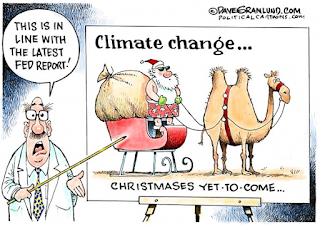
source
Oceans get their gift too : plastic. We bring all of the gifts with huge boats (I mean really huge, like making the titanic look tiny ***), forever ?
There couldn’t be any issues with keeping on going like this, obviously…
There could be another story for humankind. A story which we should start writing instead of just doing like the others. Maybe even in a system in which we are together, trying to improve ourselves instead of our wealth.
It’s time to make a system that will respect upgraded and updated human rights. Upgrades being, but not limited to : right to a place to live, education (I wouldn’t call what we have “education”), health, power, information… but without forgetting equity in goods.
That system could be a part of the human story ! But how ? Is it even possible ? I tell you that it is very much so ! Don’t believe me ? Read this then ! And then get to writing your part of it !
This story that is born from hope, we need to write it together, and like all stories it can evolve, have highs and lows… It can live with us.
I’m but a spark to light the beacon of change, now it is your turn to act and write this story in harmony !
Okay now you may think to yourself “what an utopist that guy”. I may be but it doesn’t mean this system isn’t doable. First off, even if it was impossible why not try instead of accepting a fate chosen by others, a fate that means the end of all things as I see it ?
Humanity has proven is it capable of change, after wars, french revolution, rocket launching, even surviving these millions of years should be proof of our capacity to evolve… So let’s do the revolution of human rights… again ! For good this time.
This system I speak about may look like communism, and that comes with all the prejudices that the Americans may have given you against it… very objective ones considering they were ennemies. This system is more like Marxism and under a democratic banner (in Russia it was dictatorial), but it is unique (ain’t there more than 2 ways of organizing a human society ? we just need to think about it). Only this time we need to take lessons from the past !
Concretely I propose to start a progressive conversion of the actual system, step by step, starting by the mentalities, to end up with a horizontal society in which everyone is equal in rights (and duties!) without giving too much power to a few individuals like we were wrong to do in the past, they generally ended up abusing the power.
So this book gives steps sometimes big as the ones we made on the Moon, and sometimes easy to do, to end up with another system or at least an improved version of the capitalist system. Most of the improvements can be brought to capitalism separately but together they form a new system. It would be wrong to go only half of the way of change according to me, because the heart of capitalism is corrupted.
I speak here from the perspective of a young in the centre of Europe, and I like everyone else am not completely objective… So I would be happy of any remarks about time I am too biased.
Conversion of the system
If capitalism isn’t great does it mean that communism is good ? This seems to be the way people are looking at it, because obviously if one is right the other one has to be wrong, everything being binary and all… Let’s see how we can repair some breaches so we don’t go on the same wall (of Berlin) that the communists did.
First off let’s make something clear : marxism as described in Karl Marx’s manifesty, has not yet been appliced in a democratic way.
That’s one of the issues obviously, it was never meant as an oligarchy. There were too little leaders who ended up thinking themselves as big as their statues, sending those who disagreed to goulags. The idea of the manifesty was for the workers to take power not just to change leaders. But don’t you worry theywere all equals between themselves, some equals dying from hunger at home and others equals in their big places, both groups separated. This system which was meant as a democracy slowly changed because the people did not fight for democracy long enough.
They were in a rush to change. Yet you need at least a generation to adapt to such a radical change in the mentalities or some people will not understand what they are fighting for or won’t be in agreement with the fight for the system first and then the new system itself. Which is why the change needs to happen with education, and information of the people. Because even democracy is only as smart as the poeple in it, and they obviously need to support it, meaning at least an incomplete return to the “clan” mentality is needed.
But don’t worry there isn’t much communism left, China took 1984 as an instruction book. Russia lost the war and I can’t really define what kind of dictatorial system they live in right now.
Tough, let’s be honest : there is no way our current system could be that bad, is there ? The answer to this question may be scary but it’s not hiding that will change the world, quite the opposite. It’s time to act, after realising the extent of the isssue.
Let’s start by what capitalism is, read carrefuly !
Now what even is a capital ? Something that produce values, money, wth which you can get… anything? (not sure for happiness)
But growth is the most important thing, poeple want more things and to have that banks print money when you burrow from them, reducing the value of money and meaning you always need more of it.
Obviously the most important thing about a country is it’s ¤BIP¤, who care about things like education, health, extreme differences between the poeple…
An easy way to increase production is to increase the pression on the workers, China excells at producing without having to respect human rights, child labour…
But wasn’t the state created to protect it’s people ? Can growth, unlimited production, be a goal ? Doesn’t seem like one as noble or interesting as improving humankind ***develop
Also the capitalism, like a true idealist, supposes that for individuals, companies, improving their own wealth also improves the system as a whole because such is the will of the holy Dollar. Isn’t that a nice dream ? And also even without companies, everyone worrying about their own stuff without carring about others is no issue at all, because we all have the same power; money don’t we ? Different interests will just cancel each others… Except if one has more money than the other. And people with more money have an easier time doing anything especially getting more money. Also when there is a ¤monopole¤ companies will be sure to stay ¤reasonable¤ on their prices. Here is one example : big pharmas)
Woops looks like the system can’t work properly in that case because ¤concurence¤ is needed !
And while we’re at it, let’s not forget that our interests can’t be well defended with so little money, while big companies don’t have that issue… Wissel blowers, societies of consumers and all are not enough numerous, wealthy.
So the wealthy are in charge and everybody’s happy !
Should we change ? - ¤entrée¤
So we should convert capitalism into this new system if it’s better, I will let you judge of that.
A lot of other systems are also possible, all thats is needed is to think about it !
Let’s sum up the result of a few decades of worldwide capitalism on the world, since the fall of the berlin wall in 1989. Local capitalism damaged the world before that but not in such a way, you just need to look at the numbers to see where we’ve been led by capitalism : ¤disparities¤ amonsgt the population, destruction of biodiversity, climate ¤deregulation¤… The developping countries are drowning under debt, research is slave to money, forests are cut to temporarily satisfy the global hunger for meat (to feed the animals, most don’t live in green beautiful places but they eat ¤soja¤) while worldwide energy consumption is only going up, for all kinds of energy.***graphs, proofs
In short it’s time to act… it may already be too late to avoid permanent damage. Can capitalism be saved ? Is the situation as bad ?
Evolution
How did capitalism behave before and now ? I can but speculate on what will happen… but our heading seems bad.
Did it work before ?
If it worked it will continue to do so… or not because the context has changed and the system did too, there is no insurance of it working any longer.
It is a very simple system that did work before and allow the countries to develop themselves quite quickly with a direct motivation for the people, everybody for themselves, there may even be a way to climb up the social ladder by working hard enough tough that is quite rare and difficult to achieve, tough it does remain a god motivation. Everyone can get money, they understand how to get it and use it.
Capitalism may seem to have resisted the harsh challenges of time. And indeed it’s damage is limited when it is at the scale of a country (altough the forests didnt cut themselves) but the worldwide scale makes it spirel out of control because everybody minds their own business not caring or not getting the bigger picture, which can have devastating effects especially for companies that are almost as strong as countries without any limits or ethical guidelines. Some exploit entire countries or the ressources of the entire world.
And what about now ?
According to me the true problem with the new scale is the loss of the connection between the people, some don’t produce for people but for ¤porte monnaie¤, and speaking of the people many ignore how what they buy it made, never having seen the animals they eat. In this context ¤abuses¤ are possible, the producer doesn’t know the consumer and neither will notice changes in the production line except if it was intended by the producer and he wants us to know it. Would you go to a huge ¤poullailler¤ containing 40 000 chickens and buy things there ? Seeing the sickened state they are in ? Their meat doesn’t say much tough, afterwards, when buying it in the ¤supermarket¤
The only visible difference between products is their price, and sometimes place of production, with a bit of an idea on the conditions of that production with BIO or other things but even that is not sure… Who takes the time to check anyway ?
It is well known that the species are disapearing all over the planet (except for ours of course). However what could be less well known is that those species could hold solutions to future issues, we have only met part of all species, a lot of the unknown being in amazonia, the place where there is a competition for the most wood cutted,
causing an augmantation of the forest fires).
The book the symbiotic economy will probably explain it better than I did, a synergy is possible, there is a great interest (even economic) in preserving life.
The day of ¤dépassement¤, the one at which we used all the resources the planet can produce in one year, is always reached faster… wwf day of ¤depassement¤ And so what ? Well we take more than is produced, while there still is something. But often this means destroying, like when overfishing is done it kills species. For petrol we always think we are going as deep as we will be ready to… or will run out of places but then we dig deeper, in other places, now going up to between 2,5-5km… now under the sea…
We are desperate, not knowning when to stop in this ever growing growth. But what will happen when everything will be consumed. Problem for the next generation ? Are they not our childs ? Do we not want to keep our specie going as much as ourselves ? Do not worry tough the more the Earth warms up the more accessible petrol becomes… under what used to be ice… And now we can pass North of Russia with boats, nice.
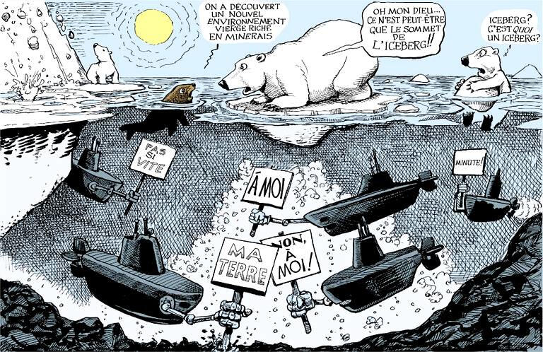
source
A possible future ?
If we keep waiting then those things will keep on happening and it will be more and more difficult to come back. I am not for a sudden, brutal revolution but we don’t seem to have the luxury of time… Especially if we keep waiting. That is why it is crucial to inform the people and to do something ! (which does not have to mean changing everything, it could simply mean consuming, exploiting… less and thinking more)
It is urgent to act before this society becomes more and more dicatorial, spying more, having more “security” forces all with the excuse of a possible ¤attentat¤, absolutely not to control us all but that’s the result. Bill Gates even speaks of installing a network of spy sattelites : earthnow.
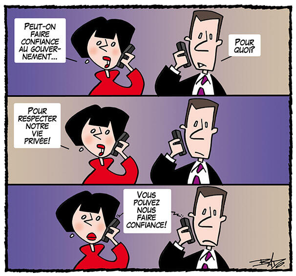
source
But we need people alive, conscious and motivated to change things, with the power to do it. As capitalism keeps running, it becomes more difficult to come back, and it will have to be towards a more and more damaged planet. Local productors can’t compete forever against multinational companies, because price is the deciding factor, and companies get tax reductions, and need to pay less because of the fact they buy goods in huge quantities, often without any ethical preoccupation.
The least we can do now is to help small stores.
But there is still hope.
This system is not like 1984 (yet), there still is some freedom in most places on the world, and hopefully we can choose to change the system without getting arrested. Even if we are being spied on like we know since Snowden, it does not mean that they will make any opposing people disapear (there would not be many left…).
Desilusions
I am going to try and explain why I disagree with the pro capitalist’s arguments that I heard.
Some say that “we all have the same chances to success”, “the world is developping, improving with capitalism”, “technology will save us”, “we only need to switch to circular economy”, or better yet “it is in human nature to behave this way”. There is work to be done !
Equal chances, it is all about working hard enough.
Numbers do not seem to agree with that statement when you consider that 80% of the people have 1% of the ressources
Yes but… it is improving by itself right ? Inequalities keep increasing
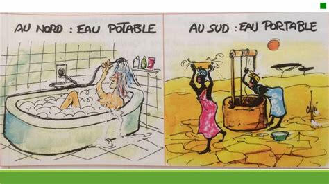
source
Easy conclusion ! 99% of the human population is stupid, they do not work hard enough to have more than 20% of ressources (and that is not even enough to satisfy them… some are just never happy…)
The issue is quite simple ; the more money you have the easier it is to get more money by investing, and money is inherited, meaning we do not all start from scratch. Those who do need an extreme luck and most of them fail. And by the time they reach some amount of money the ones who had a head start can be even richer.
It is improving ?
The only thing that I see improving is profit. But for the world we just need to see how the temperatures for example go, which becomes alarming when you realise that it will have a huge effect on plant’s growth, depending on the places on the world, because climate change is far from being the same for everyone.
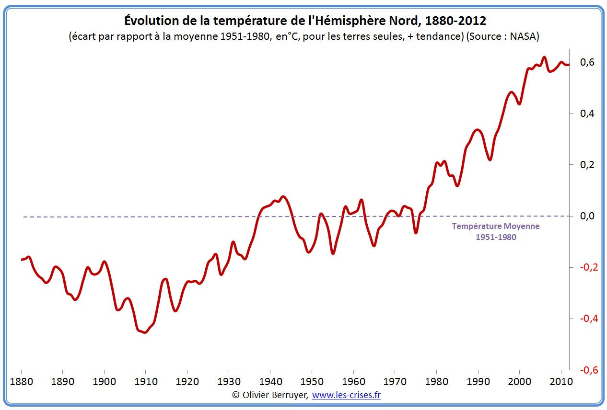
source
Another consequence is the rising of water, but a lot of big cities are close to this element that is so helpfull for trade, and fishing ! There could be millions of climate refugees, and there already are too many refugees according to some people…
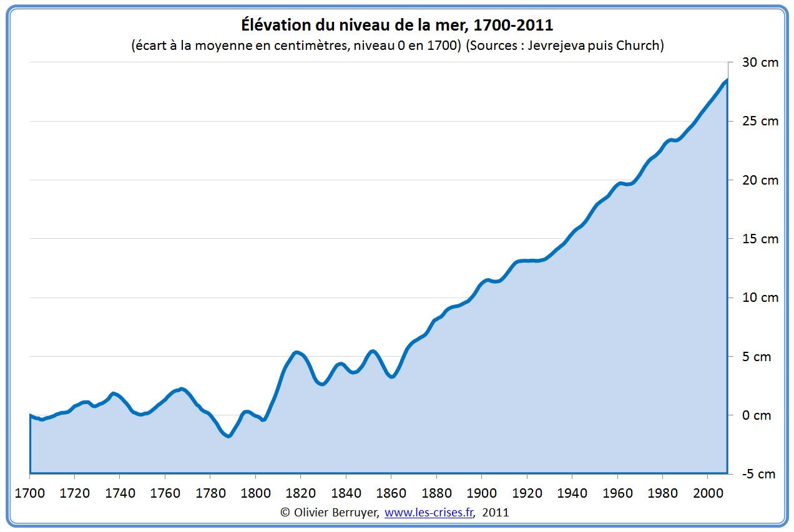
source
Need more evidence to be sure how good capitalism is ? We keep consuming more and more energy, in all of its forms.
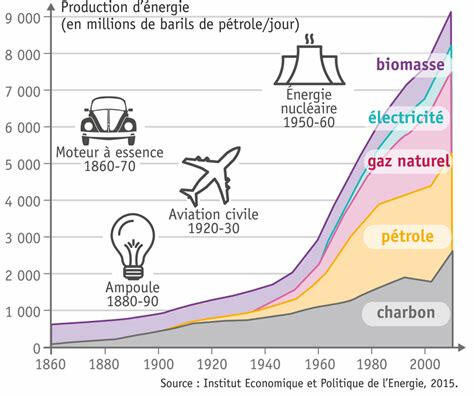
source
CO2 is being absorbed by the oceans, increasing their acidity, with overfishing on top of it some species are destroyed on the sea, while billions depend on eating fishes
These problems do not seem possible to fix under capitalism because it relies on unlimited growth, never stopping.
I do not deny the fact that some people have access to more ressources but at what cost and for how long ? During that time other take more and more than what they need. We can’t all be satisfied with this kind of inequal system, we are too many for such bad repartition of ressources. To have such standarts like in Europe and in the USA entire countries are being exploited by multinationals. We live over the means of our planet.
Technology, will you save us ?
Capitalism does make more technology available, faster than other systems, but is it not too fast ? When a new technology arrive there is a need to estimate it’s dangers, adapt society for it, make rules to be sure it is not ¤nocive¤ for the people like phones are today (some or even most of us can not live without them…***study joung 1 day without)
That partly explains resistance, “complotism” about 5g for example, some are not ready for it because they do not think it should require less tests than the previous same kind of technologies. It is yet another example of a huge use of ressources tough, with antenas every 100 meters… and even faster consumption and so usage of the ressources of the world.
Now people become deconnected between themselves, humanity seems to be becoming sterile, obesity is increasing with heart diseases, cancers, ¤perturbateurs endocriniens¤…
That come too with new technologies if we are not carreful enough, which can be the case when fast money is the goal.
We eat more and more products with E + a number on them that may have bad effects… but too late.
Different products get mixed in our bodies, that we never meant for this, the famous “coktail effect”. These new techs are indeed very advantageous… for the companies no doubt… We get new gadgets but at what social and environmental cost ?
This video is quite old but the point remains that the goal is the image of the soeciety, not human health.
Technology can not save us, not alone. Even finding a solution to climate change would not bring all the species we killed back, the trees we cut, the people who suffered… Can all problems of capitalism be solved with technology, and fast enough ? Here is what became of the research sector.
When price go down with a new technology and it becomes more available, it only makes bounce back effect stronger, same thing when it becomes less consuming in energy or else, it just gets used more.
When I speak against capitalism’s progress I do not mean to go back but to go forward. Because going back is diminishing the quality of products… to make you buy more because they break down. It is still time to really go forward, in rights and ethicity… the past has good things too.
Durable economy ?
Capitalism needs growth. When you borrow money from your bank they actually create new money, diminshing the value of money, so you need more of it for the same thing.
I am no economist tough and I would love to have the help of one !
So we always consume more, without ever being able to stop except when a crisis happens, then we fall… only to get back up and keep on it until we cannot get up anymore.
Some believe we can get out of this by changing capitalism just a bit, making it more ¤durable¤, I tought so as well but then I read this desilusion on circular economy substainable ways (I really recommend reading this) are ironically not substanable financially, we cannot yet do it in an efficient enough way and recycling is overrated.
It is in the human nature ?
Is it in us to be egoist ? Yes, but not only, we evolved to live together, to take care of one another and there is not much space for that in capitalism, there is a care for our own small family but not our big one : humanity. And even if it was in our nature to behave this way, do we not pretend to be smarter than animals, to be above this stupid fight ? Some do not even consider us as animals, not caring about their suffering and yet there are some above us behaving lower than animals, making others suffer for no good reasons.
Let us prove our superiority by stopping to destroy our own habitat, something even animals are not dumb enough to do.
Problèmes systémiques
There are problems that are in the roots of capitalism, that we cannot get rid of and once it gets to a global scale with multinationals, there is no stopping the disaster…
Possession
Possession is a convention that only works when everyone accepts it, meaning that when someone does not respect it he is punished (stealing).
It is a wonderful idea, linked to where we are born and how “successfull” we are in life, how much we work, (in truth is it mostly depending on luck) it is as fair as making a competition between cars of all times…
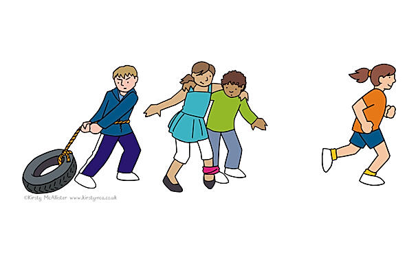
source
But why would luck give someone the right to eat more than another, to live in a bigger house… What is assumed is that money depends on how you help the society, surely explaining why illegal opperations make so much money. Politicians, leaders of unethical multinational societies that exploit people sure deserve their money. They even try to avoid the taxes…
Power… ? Yes but just to buy.
Our most relevant power in this society is to be able to choose how we spend our money, voting being for people that if they are not corrupted do not even know why you voted for them, and do not have to tell the truth… We all know what saying to someone they behave like a “politican” means…
But this power is everything but fair for everyone, and people do not even realise that when they buy a product it is like voting for it, they say that they want more, and they do not always know how it was made and where.
The big badies : multinationals
The biggest problem with capitalism as it is is the lack of measures with multinationals (those being new, governments did not react in time and now when they do the companies are fast to circonvent regulations). More transparence is needed, for now they employ other companies, giving them very little money and “not being aware of the conditions those companies make the employees work in”. This change is already in progress in France for example.
Multinationals put countries in ¤concurence¤ much like we consumers put stores in ¤concurence¤ : if it is not good enough, I go somewhere else. So governments want them so much they get special treatment ***paysbas as tax reductions or else, because countries want jobs to stimulate economy. And then on top of it those companies do “fiscal optimisation” also known as paying as ¤little¤ tax as possible. And then countries lack money that those good producing companies should be giving them, so they need to tax others… Yet those companies have the most money ! Long live money paradises, where money goes to vacation without having to pay ! I mean why pay taxes, only thing they do is boost healthcare education and stuff they do not want any of that… Countries even have to cut budget to things like health (what problems could that cause I wonder, surely not a global pandemic) and they sometimes sell guns but do not really assume the consequences when they come to live peacefully among us because we destablised their home (most of them flee to close countries tough). Some try to go to the nowadays promised land, “developed” countries. Then some populists see an easy opportunity to gain power by claiming imigrants are the source of all issues… Looks like we did not all learn our lessons from the second world war… it is harder to find real solutions than to put all the blames on some people. Some are effrayed of the unknown, the one who dresses, lives, thinks differentely. Unfortunately Europe does not seem to be the solution, it was a great idea that got damaged by time and corruption, cigarrets kill 7 million/year but they are not banned… (there surely is no link with the fact that EU is getting 1 billion per year to fight against illegal cigarrets) And please go look, this is no isolated example, Europa is mostly controled by the lobbies, tough it is sometimes fighting back.
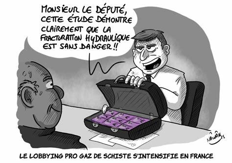
source
We need an agreement between countries to impose taxes, ending fiscal paradises and favors for multinationals. Being not overly-utopist I realise such changes would not be easy in this system directed by money, after all some even sell modified grains… so you can’t use them again next year. They even dare put a ¤brevet¤ on it, on life ! And they make people in the surrounding places pay when grains carried by wind end up in those people’s property.
Countries and government not knowing what they doing
When countries face “bad” products they often put taxes or try to ban them. But they need to be able to make that ban respected, and if they choose the taxes they get a conflict of interest…
Then about food : subsides are given to the industrial monocultural food producers so they can continue on doing these non substainable practices without those pesky bio producters annoying them because they cannot normally compete with them on the long term, using more and more pesticides just kills the soil, and one disease getting trough means everything dies. But don’t worry we always produce more. But of what quality ? It is not the same as before that is for sure. So they take us for pigs, but shall we continue to prove them right ?
And what if they put too much pesticies ? Would we not suffer from that ? Some farmers did when they consumed one liter of it to end their slavery. Also nobody cares about what the cows eat but who eats the cows ?
Is capitalism not about the most competitive method ? If so subsides means cheating. They are meant to make food available to everyone on a low cost but that most be done at the end of the chain, putting negative taxes on food products.
Suppressing the individual.
Capitalism should be better for the individual considering everyone thinks in a self-centered way. However, some people wear fashion, behaving like a herd of sheeps that buy everything some companies want them to buy. But it is probably because they like those ¤marques¤ and the suffering they cause is no big deal. Because they do not just bring work to people in need, they bring something that barrely allows the workers to feed themselves, and often are the only opportunity for the people to get money. Seems awfully close to slavery to me as shows the documentary the story of a panty.
While we are on the subject, cocal cola that is drunk by at least 1.5 billion/day and is clearly a drug, I cannot figure out why people drink this [sugar sirop (If soda commercials were honest - Cracked) with coke leaves but what I do know is that producing it requires 6 liter of water for one of that thing. And where do they take all that water from ? Developping countries of course !
Altough the best part of all of this is that after coca and all fast food companies fill you up, society sells a perfect image of the fit people. So I guess all you gotta do is start consuming things to compensate consuming other things that miraculously make you lose weight ! Or try a regime that only works with people that have an iron will.
But even considering all this we should not worry that much, because once people will no longer have this pressure to consume they should go back to healthy selves (sometimes with the help of therapists tough). They will learn how to annoy themselves, to think, again.
No hope to redeem itself ?
Why are there still problems in the world, even when we are aware of them, why do they not get fixed ? What are we waiting for to find problems, their causes and to mobilise to solve them ?
Passive citizens
First and foremost, citizens are supposed to be capable of voting. But to do that they need to be able to think right, and if things are wrong in this system be able to ¤crititize¤ it. What a coincidence that we are always distracted by the television, and other electronic devices, making us “not have the time” that is well needed to think and change things !
Multinationals do not want us to change anything and they have means of influencing the politicians, ¤pherhaps¤ even more than we do and do you think they want things to change ? For more consumption, I do not doubt it ! Keep on having fun, with bread and games and do not annoy them… It is time to produce and consume so get on it !
Let us not forget that democracy is only as smart as the people who rule it and those who vote… No wonder there are problems if the citizens are not well informed and do not have a good options when voting. In France, 60% did not vote for the last elections of 2021, what else is needed to say another way to give power to the citizens is required ? ***source
Some countries like Switzerland tried a more direct approach which seems to be working, or have another education system like ¤Norvège¤. They are showing us the way to go, with their good health level, mental and physical.
No global caring, bad “democratic” system
Some of us are realizing that the current policical system in “democraties” is not compatible with long term change, because of the limited mandate duration, and the division of powers between people with different agendas. For instance, Obama installed the Obama care system in the USA only for it to be turned off by the next president. Even if the project is not canceled it will probably not be developped by another party meaning it will be less actual by the time the original party gets re-elected. In order to be reelected it is helpfull to promise things, sometimes miracle solutions (at least that is how they seem to people voting).
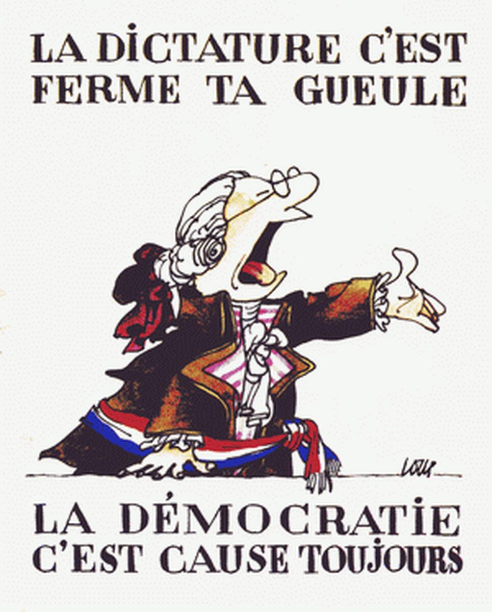
source
Some people (those who have the most power in my opinion) only cooperate with others if it is in their best (generally short term) interest. There is a need for a worldwide concern and cooperation against problems that are bigger than one country. Most of the present coalitions or countries are leniant (otherwise less countries would join them). COOP may promise a lot but that is mostly what they do… And ¤ONU¤ does not prevent wars. Let us stop wondering who’s fault it is (if you really want to, [here is a video about it])(https://www.youtube.com/watch?v=ipVxxxqwBQw/) and start acting !
¤
Rappelons nous aussi la quantité de burn out,
suicides, manifestations, crises, tous ces signes qu’il y a un problème
avec le système actuel, qui place le profit avant les gens.
¤
Crisises… of rights !
Nowadays we face crisises but there is more happening than what meets the eye… After the terrorrist attacks we lost a lot of privacy, with some algorithms being created to face that threat, they are now being used to against those who do not agree with the system, at least in some countries. ***source But we do not have anything to hide do we ? Sure and if you do not have anything to say let’s remove your right to speak while we are at it. Google, facebook use that excuse to collect raw data that they use to know what you would likely buy so they can sell that information. Do you want them to know everything ? Arte : 7 milliards de suspects.
At first, all the laws to fight crisises were meant to be temporary but traces of them remain, because the states do not want to give power away that much. I am not saying they waited for such laws to spy on us (as Snowden revealed) but it legitimates their practises which do not seem democratic to me. It will likely be the case with covid regulations too, now they know what activities you go to (by forcing you to show the identity card) and can theoretically prevent some from accessing events by faking test results (with the covid control ticket, or “safe” ticket as some call it). Furthermore, vaccination does not prevent transmission and they may force people to test for everything. Also the big pharmas are the worst of the worst, they do not have a slice of ethic and have huge conflicts of interest today. ***source 400% augmantation sur médicament vital
But I digress (I will not speak too much of a crisis while it is not over), this is just another example of how temporary regulations because of a crisis can go wrong, be abused by the government.
All of those regulations were partly taken because of a pressure made on the politicians by the medias : they want to be sold and will have a tendency of exagerating the facts to get bought, speaking of negatives things, writing big titles, which is fine except when you consider they almost all do it and the people mostly only read that. This results in a panic that the politicians have to try and reduce, with sometimes extreme means.
The latest crisis could have been averted by better manadgment of the health sector, which has been underfounded and as a result undermanned, allowing this health crisis to happen (or at least to be worse that what it should have been). In comparaison, terrorrism issues (panic of the population) could have been prevented if they medias just… spoke of something else or stopped exagerating things. When looking at the facts, terrorrism is nothing compared to any other cause of mortality like car accidents or else. And most importantly, there is not much we, as citizens, can do about it. So why worry us, why make us fear each others ??? Some of the medias take the subjects, the texts, from another bigger source (a lot of them having the same one) which explains how there are so few different opinions, and a lot of stress, causing a resurgance of populism. Also you probably already know that the medias are controled by very few people.***source
Any of this is no ¤complot¤, it is just facts and maybe some speculation about what could be. But what is a ¤complot theory¤ is to think that all coïncidences are just that. It is too easy to discredit anyone who thinks differently by calling them that, tough I agree that some or even a lot of them go way too far from the facts, and try to understand things that may not even have a link.
It is… normal… or is it ?
¤Habituation¤, that is the problem. When a change happens at first it is put in question, debated (hopefully) but if it is implemented even against the will of some people, then we will get used to it and we sometimes even forget how it was before. Nobody is surprised at how we keep being fed stupid ads, that people are dying from hunger or thirst, that everything is produced in China with no regards for human rights, politicans being… well politicians and so on. There is no big revolution against all those things, people act in a reactionary way, they react to things and there is not enough at one time to make us change the system by that way. Nobody is surprised to not have a private life anymore. Now our freedom is being diminished.
Politicians use the easiest way to fix the crisis : put responsability on the citizens (climate change, terrorrism, covid) and force things on us instead of changing the system. Remember tough, that is only the case because we allow it. Even a more democratic society could place responsabilities on the citizens, but at least we should be concerted as to what we want, how much we are willing to give up in the name of “safety”. Governments and companies also have a responsability and should be forced to take measures. (for example regarding climate change, or mass hunger and other societal problems) Reducing our rights is not the only way to fix a crisis (if it even does work).
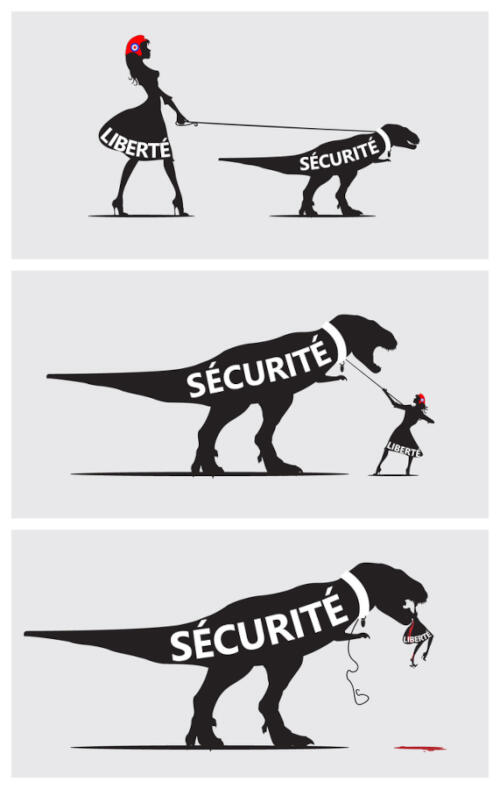
source
In love with objects and happy ?
The problem with consumerism, a symptom of today’s capitalism is simple : people have less and less connections, those are being replaced by technology (especially during the covid crisis). But of course, smyleys can perfectly transmit emotions. Objects give no true satisfaction in life, humans are social animals !***source
Additionaly of causing psychological issues, this causes abuses to happen when the producer only considers buyers like a sack of money, and the buyers do not even see how what they buy as been made. This opens the door to bad working conditions that would be less likely to happen with the social control of the buyer, especially if it happens in countries far away where the human rights are more of a guideline than they are rules.
Some people work harder and harder, getting a “better life” and hoping that the next time they get a raise, what they will manage to buy will bring true, lasting happiness. Every time. Always being disatisfied by what they have. Money only makes you happier until a given value.Consumerism has been so far that products that never expire have dates on them, like honey, sugar, salt and water (except in plastic bottle obviously). And we all suspect how what we eat is done, only we do not want to know how bad it really is.
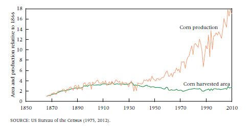
source
If we only look at quantity, there is no doubt that it is always improving, but if we call everything that looks like an apple an apple without caring for how much pesticide there is on it and nutriments in it we should not be surprised by the rise of cancers. ***source
We need to make things more locally, more respectfully, by recreating the link between people, so they can find fullfillment in their job and it’s usefullness to society, the joy it brings to those they know.
Reduction of public money.
With inflation money keeps on having less value, but worry not, politicians never run out of excuses to diminish the money allocated to us. We saw what happened with the ever diminishing health budget. They think of the state like a company that needs to be optimised, privatising some sectors so they can diminish the allocated money without seeing the effects… But of course, the health sector should be profitable, do not give them too much money or you could have a too good public health… Imagine them healing too many people… Overcrowding would be upon us ! For education most countries are still using old and ineffective methods, still judging students partly with the accumulation of knowledge when internet knows everything and all that is needed is to have interest into the world and then all is possible. How can we accept these ever dimnishing budgets to those crucial points ? If money dictates we should not be able to heal everyone then fuck money ! And where is all that money going ? People need a good health, education, and safety in order to think and live normally, that is the sole purpose of the state… So maybe we should change it.
Could we, would we, should we change?
Capitalism is like a patient in a terminal state, it is possible to improve his condition but we cannot save him from his greed. Will that be accepted ? Will we do something about it ?
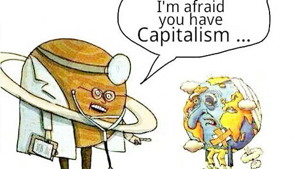
source
Change is always possible, let me tell you a story as it is the prefered way we humans used (still use?) to communicate.
Here goes the story of cooperation : At the beginning of life on Earth cellules cooperated, by chance. Big cells found a reliable way to generate energy from some bacterias. And that is what allowed multicellular life to exist, us and everything that we see alive today. Together it was possible to go further Then weak animals, incapable of defending themselves say, against a tiger, alone, cooperated. They were not especially gifted in strenght, agility, speed… only a bit smarter than others. Their intelligence allowed them to cooperate and their cooperation to grow. They dominated Earth and here we are, thriving until now, trough specialisation ; everyone doing the tasks they do best. But now we hit the limit of capitalism. The competitive mentality that goes with it does not allow cooperation. It will not allow us to go together beyond, exploring ourselves and the universe. We may have discovered how to destroy the Earth many times, but still not how to live together well enough, still not understood how we work. We are but children with guns, immature to use the tools that were developped too fast. Now imagine what we could do, united, with all the resources of the Earth under a common goal, our improvement, or techonogical ascension, but a true one this time not only making computers run faster than we need them to, as for information faster than we can process it. Nuclear fusion, green and sufficiant power, going on Mars to make it suitable or even further, we could rise on the spiritual level, learning from some monks today that can even stop their heartbeat. But to do all of that we need to focus on what we can achieve together instead of what separates us, difference is strenght. Unity is power. Alone we are nothing but a drop of water, together we are the sea.
As someone said before me : “Those who want things to continue the way they are do not want them to continue at all”. ***source
Power to the shareholders.
The world is being used extensively, but worry not, it is a good profitable business. How is it possible to convince some from abandonning their money, their possessions, their power, especially those who have most of it ? We can only hope it is possible, because standing down will bring us nothing except shame, but fighting for such noble purpose is a goal in life, always improving things for others will bring satisfaction, even if we can not do everything alone, we do our part. Now back to those who have more power than others, some will have to realise that you cannot just play with the Earth with 7 billion people on it, putting chemicals in the atmosphere to change the climate, purposively this time, it is only a shame that an example will most likely be needed to make them realise that. We need to make them understand that life having no value does not mean it is negligible. And life is not but a game in which everything has to be maximised !
Conclusion
Capitalism was a good system to develop humanity at start with a simple goal, when base ressources were sparse and our survival as a specie in question. But nowadays we have other tools, the stakes are much bigger and we need to care about each others, the lack of global care and corruption of this system is no longer acceptable. We cannot, should not have motivations as low as personal gain while we hope it will fix things for others when we improve our own situation. The problems that were negligible back in the days were made huge by ¤mondialisation¤ and the mentality that if you can do something you do not have to ask yourself if you should. Ethic, the quest for knowledge, our betterment… these are worthy goals. It is time to stop exploitating and start constructing, further in meaning.
Change, but how ? - Main course, core of the subject
Here lies the wonderful system, the one I promise so much things about… However that system is not complete yet, and it is certainly not only contained in the following pages, or even in this book. That potential system lies in each of us, what follows is but a draft, it will only be perfected by you, by all of us. So of course watever follows can and should even be subjected to criticism (but preferabelly a constructive one, something other, more complex than “it’s bad”). Debate is not to be avoided, especially for a future democracy (some would say we already live in one), there is no use for blind faith in a system. If there are problems we should fix them. How this criticism shall be organised depends on the scale of it, but comments may be posted in this website and I may need help from moderators.
Each of the following points may be brought to capitalism to improve it, but together they form the new system, and it would be a shame to keep the rotten core of this old one, source of so many problems. The new core is human rights, but extented ***how, compare. These rights should extend to all of conscious beings, but that is for later, for now it is obvious they should be the same for all, watever the sex, what they may think or look like, equity must be garanteed.
However such changes should happen slowly so that mentalities may adapt to it, starting with education.
Goal
What is the goal of this new system ? What will replace the hunger to procure for ourselves of capitalism ?
The core will be human rights and equity meaning the start should be to procure all base ressources for everyone so that nobody has to worry about such things and we may worry about more important things such as pursuing one’s goals or simply self-improvement, pleasure, helping others… and others and why not all of it at once.
But all of it needs to be possible in the long term, thus we need to be working with nature instead of against it, because we depend on it for resources and we are only a part of it after all.
When all of that is settled, with the corresponding infrastructures to maintain it, we can achieve anything we want, be it going to the stars, improving our ehitc, our mentalities, our knowledge, ourselves… Or simply to enjoy life.
Next generation; education my precious!
Education is the key point making all of this system possible, it is what allows us to transfer our knowledge, to persevere as a society and thus to build all, to form the spirit, learn the rules, prevent crimes… in short to work together.
In that optic a good educative system would be one like the one made by Montessori ***link that respects the learner in his wishes, and allows him to become independant, notably by rewarding those who look and not only those who find answers to the questions asked. This method even teaches how to write faster than the traditional one but may be more complex to implement and adapt to more mature learners (it is meant for small aged children). There are already some such schools but they are hard to find (probably because of lack of funds and interest in the independance of childrens). On top of that the competitive part of school needs to be reworked, by encouraging more teamwork, and replacing that comparaison pressure by an urge to learn, and improve. The follow up after the base would be to have a base shared by all and after that to go wherever the learner wants to. Such base would include how to make one’s opinion on things such as voting, develop one’s critical mind, ¤savoir vivre¤, how to speak a common language that will be chosen to communicate with all of humanity (english?), an introduction to nature’s beauty (farms, lessons could be given in nature), and finally a basic understanding of world issues. In short, all that is needed to be a responsable, free and conscient citizen.
Afterwards everything will depend on the interest of the learner, and can be as varied as mathematics, science, history, languages, art, phylosophy, sport… one tries different things until he finds what he wants, and then until finally he chooses to stop his formation and start working with the help of an institution to find said work. The focus should be to learn how to do, not how to know by heart things, because nowadays information is easier than ever to come by, with internet, it has no big value, however interpretation with a critical and adaptive mind is the key.
Then if at any time one is bored of his work, or has a thirst for knowledge or for any other reason, it is possible to come back to learning, or even to orient oneself differentely. There is no age at which we cannot learn anymore, as shown by ***studies, keeping one’s mind sharp and staying young altough the learning speed is reduced with age.
Culture and other human creations
The local culture of a country shall not be lost, but it is ¤supposidely¤ teached by one’s family (as is the case for any cults that shall certainly not be imposed at school). Said family can of course teach anything other to their child, including ¤savoir vivre¤ or not. That said, the guides (“teachers”) have a huge freedom and enough time to teach anything they like ! There is no big performance requirement like today (except for the base) so local culture can be teached, or games can be played, excursions… watever is found relevant by the guide, and he feels confident to teach. Speaking of culture, the idea would be that each citizen keeps his local identity but on top of that is able to have a global preoccupation for others, everywhere.
However, general culture and human creations (art, books, research…) should be creative commons, thus being the culture of humankind, to which we all can contribute and from which we can all learn without having to pay. Culture first and foremost is for all of us, not for the one that created it, we are smart only in our cooperation, and limiting knowledge on base of money or belonging to one organisation, or “possessing it” only limits our common creativity and intelligence. There is nothing to be lost by giving knowledge, unlike lowly material things that are lost in the process (which still give the pleasure to give). That is the big difference between money and knowledge, and in light of that they should not be treated in the same way, copyrights only make sense in a society that bases everything on money, and they should be removed or very limited. The current logic of “to each their own” is already not working, we have to work together in order to achieve anything significant, like nuclear fusion or going to space, so there is no justification for laboratories not knowing what other laboratories are doing. Furthermore, transparence is key to prevent any corruption as there can currently be when an organisation finances a study to be able to sell a product… If the results do not suit them they can choose not to publish said studies, as it has appened before with climate change ***source, ¤amiante¤ and many others. And the laboratories may be influenced to… see the results another way…
That being said, nowadays some content creators (artists and others) depend on revenue from copyright to live. As a transition, they should be payed by the state, considering they inform, distract, please the citizens. Artists should be free to take their time to produce quality content and not in a hurry to produce. This also includes street musicians so that they will no longer have to ask/harass people for money.
The Happy Child
When considering education it is needed to go further than the school, because we cannot assume everyone to be a good parent, even if they want to they may be badly informed. Obviously there is not only one method to teach children, but those who want must have the possibility to be guided, and even those who do not want to cannot be allowed to abuse of children. Some guidelines may be given at school.
The best way to teach could be by example (explaining how “well” ads work), meaning that phone zombies are not allowed in society. There seems to be an invasion incoming, caused by a grave disease : technophily. The fact that phones cut the link between people can be tolerated but not with children. A society where children grow up almost alone, with a phone in their hands does not seem like a good one to me.
At the other extreme, there must not be overcontroling, it is crucial for young people to build their self-confidence by not over-controling, the independant logic that is applied at school should be continued at home. Mistakes are a necessary part of life.
There are other dangers in today’s “modern” society, as in drugs, television abuse… and people should be protected from those, or learn to control them, otherwise children suffer the consequences in the form of agressions. For example, alcohol abuse causes totally non violent euphoria and relaxation, at least at first.
We have to accept the possibility that each of us has a darker side, one that most of us manage to control, trough education and other means. But drugs and passions unleash that more primitive side of us, the side that we do not want to show.
Chacun a un côté primitif, obscur, incontrôlable qui est libéré par les
drogues, l’abrutissement devant la télé… Il faut apprendre aux gens à
se protéger de ces dangers. La conséquence est parfois ressentie par les
enfants ou compagnions dans le cas le plus connu d’abus d’alcool qui
cause une euphorie de la personne qui n’est absolument pas aggressive
(au début). Il est important que l’on vérifie que les parents font
correctment leur job d’éducation puisque absolument tous les problèmes
de la sociétés auraient pu être diminués / empêchés par une meilleure
éducation. Il est inacceptable de ne pas nourrir assez son enfant ou de
le frapper… Cela va de soi si l’on a été éduqué à la base et donc
ceux qui ont été sujet à ces traitements vont parfois les répéter,
manque d’autre inspiration en effet il n’y a pas de manière parfaite
d’éduquer les enfants qui marche avec tous (mais il y a des manières qui
ne marchent avec aucuns). Ainsi il faut qu’il y ait des visites
surprises d’infirmières qui vérifient la santé de l’enfant (voire des
parents pendant qu’on y est). C’est du boulot mais pourquoi fait-on des
concessions aux multinationales ? Pour des jobs, alors prenons donc ces
opportunités et formons donc des gens ! Ne perdons pas du potentiel avec
des chomeurs.
A moins d’être aveugle tout le monde est capable de remarquer qu’un
enfant est maltraité, quand on le voit à l’école (si il ne vient plus
les signes ne sont que plus évidents) il faut juste créer un numéro
d’urgence pour signaler une suspicion d’abus d’enfant dans lequel cas la
visite de l’infirmière sera accelerée (et accompagnée). Et quand on
découvre un problème il faut tenter de résonner les parents et si ce
n’est pas possible protéger l’enfant et dans les cas les plus graves
entraînant la mort de l’enfant les empêcher d’avoir d’autres enfants
avant d’avoir fait un suivi psychologique sérieux. On peut laisser une
seconde chance, mais à la 3ème erreur grave il faut agir à la hauteur de
la gravité de la situation.
Pouvoir
Le système actuel n’est pas seulement une atteinte aux droits humains
car l’on délègue ses droits au lieu de les utiliser directement, mais en
plus cette démocratie est manipulée par le big data. Les élus
l’utilisent pour savoir ce qui plaît aux gens et savoir comment
influencer certaines personnes… Car il va de soit que les promesses
électorales n’engagent malheureusement pas les élus (encore un
changement à faire !) Ca semble bien en principe on pourrait croire que
les élus nous écoutent mais en fait non ils savent juste mieux quoi nous
promettre… Marketing politique, démocratie ciblée
Je propose la mise en place d’un vote direct remplaçant le système avec
des élus tout puissants, avec à la place des lois mises en place par des
gens choisis au hasard et volontaires formés pendant autant de temps
qu’il le faut pour qu’ils soient compétents.
Il va de soi qu’ils pourront récupérer leur emploi par après. Une telle
tournante de ceux qui appliquent les lois devrait permettre une
diminution énorme de la corruption, car il faut corrompre les gens tous
les X de changement, au lieu de simplement convaincre les même personnes
en boucle à coup de “séminaires” visant à les rendre favorable aux
idées des lobbyistes. (les même politiciens sont ré-élus et surtout
règnent pendant près de 6 ans… beaucoup trop !)
Ainsi n’importe qui peut proposer une loi après avoir suivi une courte
formation permettant de la paufiner (où devrait-elle s’appliquer,
faut-il plutôt en modifier une autre…). Pour sa mise en place par des
gens formés il faut X signatures. De plus d’autres gens seront formé
pour juger ces lois avant qu’elles ne soient disponibles pour un vote
global (pour avoir le plus de sujets pertinents, mais cela sera fait en
toute transparence). L’idée est qu’il sera possible de choisir un
“niveau” de qualité de lois que l’on veut, si l’on veut seulement voir
les lois déjà approuvées et vues par beaucoup c’est possible et si
certains ont le temps d’en lire plus, pas de problèmes ! Il faudra
peut-être limiter les lois par personne/groupe si trop de lois sont
proposées (et il faut qu’il y ait une démarche de recherche de la part
des citoyens, on n’accepte pas un brouillon comme loi, seulement comme
idée pour inspirer d’autres).
En bref tout cela consiste en donner beaucoup plus de puissance aux
pétitions citoyennes et répandre leurs utilisation plutôt que ce système
de vote ineffectif où les élus sont faciles à influencer mais
malheureusement pas par le peuple, qu’ils n’oseraient jamais
manipuler. Le peuple n’a même pas confiance en ses “chefs”… ils ne
savent plus qui croire et ne peuvent plus exercer leur droit de vote,
seulement tenter de voter pour le moins pire d’entre eux, ou blanc. Il
va de soi que ces pétitions doivent être rendues indépendantes pour être
efficaces, il ne faut pas qu’un milliardaire détienne le site, mais bien
des citoyens tant que la question de possession a un sens.
Bien entendu le système en ligne sera sécurisé, et il y aura des votes à
plusieurs niveau pour qu’ils soient adaptés aux circonstances
locales/globales.
Il est essentiel pour le prototype de démocratie actuel si l’on veut le
conserver un certain temps que les politiciens soient responsable de
leurs paroles et attaquables en justices pour des mensonges qui
influencent les votes des gens. Couplé à cela il faut trouver une
solution pour leur empêcher de parler pour ne rien dire en “répondant”
à une question (en parlant d’autre chose n’ayant rien à voir…). Un
autre sparadra qui pourrait être appliqué pour diminuer les dégats avant
de révolutionner le système serait tout simplement de voter en ordre de
priorité afin de diminuer la puissance des extremes que seulement
certains veulent.
Devoirs envers la société
N’oublions pas que parallèlement aux droits il y a toujours des devoirs,
qu’il faut bien que quelqu’un fasse, si l’on veut pouvoir accès a un
niveau de vie élevé, à des droits. Le droit de manger à sa faim entraine
un devoir de produire de la nourriture.
distribution des devoirs
Comme je l’ai déja dis le pouvoir d’appliquer des lois est donné au
hasard à des volontaires. Chacun fait le choix d’aider la société d’une
manière, une fois dans sa vie à un âge donné. Cela peut être pour le
maintien de l’ordre de manière plus active (car chacun peut reporter des
infractions), mais aussi pour instaurer les lois, les juger, nettoyer
les rues; celà concerne en fait tous les travaux qui seraient trop
dérangeant à faire quotidiennement. Le travail sera effectué pendant un
certain temps minimum dépendant de la complexité du travail, et du temps
de formation.
Notons tout de même que si la liberté est clé personne ne devrait passer
sa vie à glander. Même quelqu’un regardant des séries tout le temps peut
les coter ! Et tout le monde va sur internet et pourrait facilement
coter le niveau de l’information : que disent les autres sources,
auteur, … Il est important d’avoir cet esprit de motivation
altruiste. Non pas que j’ai quelque chose contre ceux qui ne font rien
ou esquivent les taxes… les pauvres qui le font sont pardonnables
contrairement à certains.
entraide
Nous ne devrions pas être seuls. Les forces des uns doivent compenser
les faiblesses des autres, et pour permettre l’amélioration de
l’humanité il faut d’abord nous unir au quotidien. Cela passe donc par
aider pour les choses de bases et être aimable mais n’oublions pas que
des problèmes plus graves que traverser la rue existent et il est donc
important que chacun ait une formation de premier secours de base,
similaire au
beps
qui a pour but de permettre de stabiliser la personne en attendant que
les secours arrivent. La vie n’est pas juste, raison de plus pour faire
tout ce qu’on peut dans son aura d’influence pour améliorer ne serait-ce
qu’un peu le monde, de le rendre plus juste pour les autres. Si la vie
est dure on peut souvent le mettre sur le dos des autres alors assurons
nous de ne pas être le problème de quelqu’un et espérons qu’ils feront
de même.
travail
On peut ((et veut) difficilement forcer quelqu’un à faire un travail
spécifique mais il y a toujours une chose qu’ils peuvent et veulent
faire (j’espère). Un travail ne suffit pas, il faut qu’il ait un sens et
que la personne le comprenne, le travail doit être plus qu’un gagne
pain, il doit être un projet. Voici un documentaire arte qui pousse à la
réflexion (dans toutes les directions !) sur le sujet.
Au sujet du travail il est temps de solutionner ces rangées de bâtiments
monotones, répétitifs aussi des batiments répétitifs, ceux ci démotivent
les gens et les rendent moins productifs et surtout moins motivé. Voici
une vidéo en anglais qui parle de ce qui rend les villes remarquables
aussi intérressantes. The school of life attractive cities
Mais ne vous inquiètez pas de ceux qui ne veulent travaillent pas, la
télé et réseaux sociaux etc ont une valeur dans ce système afin qu’il
soit impossible de ne faire que ça, cela coûte dans le sens que c’est
peu utile pour la société puisque c’est à peine un loisir. Donc si les
gens n’ont pas de moyen d’être passif devant leur téléphone ils vont
s’embêter et recourir à autre chose, par moments. Le “problème” est
juste de donner des choses plus interressantes à faire aux gens. Un site
clair proposant des idées de travaux, projets ainsi que ceux pour
l’instant nécessaires doit donc exister et être entretenu.
vigilence
Chaque citoyen a en tout moment un devoir de vigilence car son
manquement cause énormément de problèmes dans la société moderne, comme
la propagation des fake news (par les “réseaux sociaux” qui sont tous
sauf ça car les gens se rendent moins compte qu’ils ont besoin de se
voir, de socialiser réellement et non en ligne par des messages dénudés
d’émotions; même si je n’ai rien contre une source alternative
d’information totalement fiable, il faut vérifier cette fiabilité).
Pour en revenir au point, il faut une vigilence quand au respect des
règles importantes pour les autres (par là j’entends qui protègent les
gens comme la distance minimale entre une voiture et le passage pour
piéton qui si non respectée augmente le risque d’accident mais pas des
choses qui limitent trop les libertés comme le confinement). La
conséquence est de sauver des vies et si cela doit passer par ennuyer
certains (qui le méritent) tant pis. Les papiers par terre peuvent à la
limite être ignorés mais pas les risques mortels.
Organisation mondiale
Ce système est basé sur des communautés locales réunies au niveau
global. Il est possible de conserver l’organisation actuelle bien sûr,
avec le monde divisé en continents eux même divisés en pays,
communautés… en s’assurant juste d’unir les continents entre eux, et
d’unir le tout par différentes organisations continentales et une
mondiale. Il est important de préserver les cultures locales qui sont en
train d’être gommées par la mondialisation, et les pays doivent être
aussi indépendants que possible.
Les multinationales seront reprises pour le bien commun, et leur manière
de produire doit être changée ou détruite, car la “nourriture”
industrielle donnant cancers, surpoids et diabète***source E
dangereux tellement sa qualité est basse n’est pas acceptable. L’idée
est de nous grandir tout en conservant l’environnement dont nous
dépendons.
Les infrastructures seront réparties de manière juste (écoles, hopitaux,
logements, en fonction des besoins et disponibilités locales, j’espère
que c’est +- déjà le cas) et leurs nécessité sera déterminé par des
experts ou citoyens locaux. Il est possible de demander plus de ces
infrastructure si les actuelles sont remplies, dans lequel cas ce sont
ceux qui y vont/ travaillent qui le déclarent au gouvernement local,
constitué par des volontaires formés, qui agira et en informera les
autres gouvernements au dessus de lui. Ceux ci auront donc aussi le
pouvoir d’accepter des travaux, ainsi que d’autres choses qui ont du
sens dans la gestion locale (comme protéger la nature, le patrimoine).
Bien sûr sans argent on ne peut rien réaliser, cela n’aurait aucun
sens de se baser sur les besoins locaux… (plus sérieusement ne nous
laissons pas limiter par du papier) il faudra mettre des normes qui
dépendront bien sûr de la situation locale comme avoir un parc tous les
X mètres, car qui ne veut pas un peu de nature près de chez lui ?
Les gens vont devoir changer d’optique et chercher leurs points communs
plutôt que leurs différences pour apprendre à vivre ensembles (par
exemple pour les 3 grandes religions qui sont toutes contre la
violence… en principe et sont pour aider son prochain il est grand
temps de s’entraidiez !).
Pas d’argent ?
L’idée est de se débarrasser de l’argent si possible dans cette nouvelle
société, quite à le remplacer par d’autres valeurs locales. Mais est ce
possible d’avoir une société sans argent pour faire correspondre l’offre
et la demande ? Par exemple si plus d’un produit est nécessaire le prix
va augmenter jusqu’à ce que l’offre s’adapte. Dans ce système la valeur
des biens devra à la place dépendre directement de leur disponibilité
pour les gens. Est-il possible d’avoir tout le nécessaire en tous biens
sans inciter les gens à faire certains métiers par exemple ? Je pense
que l’automatisation peut répondre en partie à ce problème (en ayant des
usines multi usages, et des biens faciles à créer en plus de s’occuper
de réparer tout ce qui peut l’être), tout en ayant une mentalité
circulaire (on ne possède rien, tout est loué donc les objets tournent
beaucoup plus, on a besoin de moins d’entre eux). De plus cette nouvelle
société serait plus flexible avec une mentalité de se reformer à
l’infini, et avec les bonnes mentalités les gens se reformeront en
fonction des besoins qu’ils connaitrons en parlant avec les autres
acteurs locaux. Si ça ne marche pas il sera facile à la population de
s’en rendre compte et d’aviser, en donnant par exemple des bonus
temporaires pour ceux qui fournissent certains jobs ou en faisant
simplement varier la valeur pour que moins consomment de ce produit.
Seulement la régulation de l’offre et la demande n’est pas la seule
chose fournie par l’argent, il y a aussi la qualité des produits (en
principe). En effet les gens veulent de l’argent donc ils préfèrent que
vous n’alliez pas chez leur concurrent, et ont donc tendance à faire des
meilleurs produits pour fidéliser la clientelle par exemple (la
concurrence). Comme vous l’avez remarqué, la qualité de la nourriture
ne fait que s’améliorer ! (ironie, l’obésité monte ça oui
***source) Les multinationales ont déjà enlevé cet aspect de la
concurrence ou presque vu que un autre facteur que la qualité est le
prix et c’est le seul vrai facteur (que ce système va éradiquer), avec
la désinformation sur la qualité de la nourriture (pareil). Donc bon
c’est déjà de la mauvaise nourriture, et le changement de mentalité
devrait améliorer la qualité de celle ci surtout qu’elle sera plus
locale.
Comment ?
Il va de soit que pour permettre une répartition des ressources
équitable (chacun recevant le même potentiel) sans qu’elle soit égale
(tout le monde n’a pas les même envies, besoins) il faudra peut-être
instaurer un système de valeurs, qui pourrait alors être pensé comme une
monnaie locale puisqu’il dépendrait des disponibilités locales. Plus
quelque chose est abondant localement moins sa valeur est haute, et les
produits nécessitants une importation ont une valeur plus élevée, pour
compenser le transport. En soi il faut toujours un système de valeur,
permettant de répartir de manière équitable ce qui n’est possible qu’en
évaluant les ressources d’abord.
Il est normal que des gens puissent acheter/vendre (jouer avec) la
nourriture en masse puisqu’il s’agit d’un bien, ayant donc pour effet de
faire varier sa valeur pour ceux qui en ont besoin. Non mais
sérieusement, la demande et offre en nourriture doivent dépendre de la
production et du nombre de personnes à nourrir pas d’autre chose !
Qu’apportent les spéculateurs à part l’imprévisible, et donc de
l’insécurité ? On pourrait penser la même chose de tous ce qui
correspond à des besoins comme le logement. L’argent et donc la
possession fait que les gens possédant ont des intérêts personnels en
plus des intérêts publics qui peuvent être opposés, comme Monstanto
possédant des graines et trop de pouvoir : on en est arrivé a un tel
niveau de non sens qu’on vous vent des graines modifiées pour ne pas
donner des grains… jackpot pour ceux qui ont réussi à breveter ces
ogm donc pour ceux qui germent si ça se mélange avec vos plantes
normales qui poussent dans le coin ils osent vous attaquer en justice
(incroyable mais vrai !) Ils ont même essayé pour les non ogm..
des brevets sur la vie c’est super… déjà qu’on possède des animaux
en plus on va posséder leurs gènes non mais ça va pas ou quoi ? Dire
qu’il a fallut se battre pour une telle évidence.
Transition vers un monde libre de l’argent
Le seul moyen que je vois pour forcer les puissants à perdre cette
puissance est d’arrêter de croire en cette valeur. C’est aussi simple
que ça, ça n’est que du papier. Qu’est ce que du papier pourrait avoir à
faire avec le besoin de manger ? Aussi, l’influence des puissants leur
vient précisément de l’argent, et 80 pourcents de la population
possédant 1 pourcent…***source Cela fait 80 pourcents contre
l’argent, non ? Les “puissants” pourront toujours se baigner dans des
piscines de billets, je suppose, leur valeur étant nulle. Mais qu’ils
n’espèrent pas du luxe sauf si tous en ont, dans le nouveau système.
Quand le changement sera prêt, plus personne ne leur obéira et ils
seront bien forcés de suivre. Bon ça c’est quand les citoyens se
réveilleront, en attendant il vaudrait mieux faire une transition
progressive. Il ne faut pas trop espérer qu’ils accepterons d’abandonner
leurs privilèges exagérés actuels.
Pour permettre le changement il doit être réalisé de manière progressive
car il faut diminuer le pouvoir abusif de certains qui détiennent
l’argent pour l’instant et la majorité de la Terre : milliardaires et
multinationnales. C’est pour cela qu’il est essentiel de mettre en place
un impôt sur la fortune ainsi qu’une taxe sur les multinationales aussi
tôt que possible car de l’argent ils en ont trop et surtout les Etats
n’en ont pas assez, ils en manquent même cruellement puisqu’ils doivent
diminuer le budget de choses essentielles telles que la santé,
l’éducation… Cela peut être dur au début mais c’est une étape
nécessaire car ils freineront bien sûr tout changement qui veut répartir
les ressources de manière équitable et donc rendre ce qui revient de
droit aux enfants de la Terre, empêcher que certains puissent se
comporter comme des Dieux.
Afin de permettre le changement vers une société plus raisonnable il
serait utile d’imposer une taxe carbonne mondiale en plus de celle sur
la fortune, cela va préparer les gens à vivre de manière plus
raisonnable, et de plus l’heure est grave au niveau du dérèglement
climatique on a une bombe à retardement et pour l’instant tout ce qu’on
fait c’est se dire qu’on la désactivera bien plus tard et on jette plus
d’explosifs sur le tas, jusqu’à ce qu’il devienne trop grand, ingérable.
Au niveau des travailleurs il va de soi que ceux ci doivent avoir un
pouvoir participatif augmentant progressivement au sein de leur société
pour qu’ils puissent l’adapter et réduire leur exploitation, protéger
leurs intérêts, puisque c’est le principe du capitalisme que les
intérêts s’équilibrent il faut d’abord qu’ils puissent être
représentés.
Il va de soi que la répartition des ressources devrait plutot être faite
progressivement pour éviter de rencontrer un mur. Ainsi il suffit
d’augmenter l’impot sur la fortune et de commencer à le distribuer sous
forme d’augmentation du chomage, cpas, salaire minimum puisque cela
signifie que ceux qui sont dans les situations les plus problématiques
auront plus d’argent dont ils ont bien besoin pour diriger leur vie.
Ensuite on peut le redistribuer à tous sous forme de revenu universel.
Il est important que les Etats ne prennent pas tout simplement tout
l’argent de la taxe carbonne ou de l’impot sur la fortune, il faut
qu’une partie aille aux citoyens pour redistribuer un peu les
ressources.
Thomas Piketty explique bien en
précision comment d’autres changements de ce type peuvent être opérés
pour améliorer le capitalisme, ce qui fait partie du chemin permettant
un autre système (car un changement se doit d’être progressif s’il veut
être raisonnable, durable, atteignable). De telles améliorations rendent
une partie de son pouvoir légitime au peuple et l’enlève des tyrans
modernes.
Ce changement important préparera le terrain pour une nouvelle
répartition des ressources. Il va de soi qu’il n’y aura donc plus de
subsides et beaucoup moins de corruption (enfin) qui ne font que masquer
la vraie valeur des produits et permettent l’existance de non sens comme
l’avion moins cher que le train pour un voyage court. Le tout rendu
possible par les merveilleux lobbys qui mettent trop souvent leurs
intérêts personnels avant l’intérêt commun.
Droits et répartition des ressources
L’idée générale est qu’il est possible d’avoir une ressource en plus,
mais au prix d’une concession. Pour les personnes différemments aptes
(“handicapées” mais j’utilise l’autre terme pour souligner le fait que
si ils ont moins d’un sens, ils le compensent par un autre; ils ont une
autre vision du monde !) les besoins sont bien sûr autres, et ils
dépendent aussi de la corpulence, de l’état de santé etc. Tous les
outils permettant de se déplacer, de voir… normalement sont
distribués sans aucun coût ou concession.
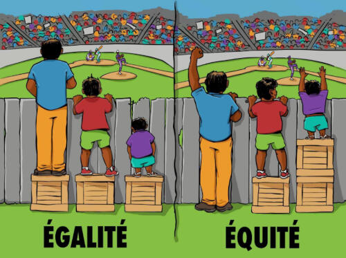
source
Les besoins de tous sont différents.
Il va de soi qu’on commence avec plus que les besoins de base autant que
possible dans les disponibilités en ressources du monde ! La valeur de
ces différentes ressources sera dépendante de la situation locale et
donc des monnaies locales (servant juste à mettre de la valeur sur les
biens et les ressources pour les répartir de manière juste). Les drogues
telles que l’alcool, le sucre, la cocaïne, la caféïne… ne seront bien
sûr pas interdites mais à la place elles auront un coup exponantiel pour
empêcher les dégats importants ; dès qu’on dépasse la dose maximale
quotidienne inoffensive, la valeur explose pour représenter le coût
énorme pour la société en cancers, violence… Il faudra donc aider les
drogués sévèrement dépendants d’un excès (pour les cigarrettes par
exemple, une c’est déjà trop il n’y a pas de consomation raisonable) .
Ce principe de répartition - plus d’une chose et moins de l’autre -
s’applique à tous les points suivants (même à la liberté par le nombre
de voyage, toujours dans une optique que nous soyons tous égaux, c’est
aux gens de choisir leurs priorités).
Concrètement cela veut dire la mise en place d’une application
permettant de commander tous ces biens qui seront livrés à des endroits
clés avec de la place, à heure fixe toutes les semaines et il suffit de
venir avec l’application pour récupérer sa commande. Les produits
arriveront à une vitesse variante en fonction de leur distance
puisqu’ils seront bien sûr amenés en bâteaux solaires, l’avion réservé
pour les choses urgentes et exceptionnelles comme des médicaments ou des
biens qui périraient trop vite (ou les gens). Celà ne vaut pas que pour
la nourriture, au début on choisit le type d’immobilier et mobilier, à
18 ans (avant cet âge les parents ont un bonus de valeur pour nourrir
leur enfant et le loger bien sûr) et on peut aussi choisir son régime
alimentaire et automatiquement des produits seront proposés pour chaque
composant de base (vitamines etc) dans différents aliments jusqu’à ce
que la dose recommandée soit atteinte en mettant les moins couteux pour
la planète plus en évidence et à la fin on peut choisir tout ce qu’on
veut pour se faire plaisir, les non essentiels comme les drogues et
loisirs électroniques. Tout est loué donc il faut dépenser des valeurs
tout le temps pour sa maison, ordi etc qui peuvent être changés à tout
moment et il reste de la valeur pour les vacances bien sûr. Il est
toujours possible de récupérer des monnaies locales par cette
application, pour faire du troc avec les locaux ce qui est fortement
encouragé.
Tout cela doit être réalisé dans une mentalité 0 déchets mais il y a
déjà assez de livres sur la question. Famille 0 déchets est celui que j’ai lu et je
le conseille bien que ce qui est important est bien sûr la mentalité
avec laquelle tout est approché.
Ressources primaires
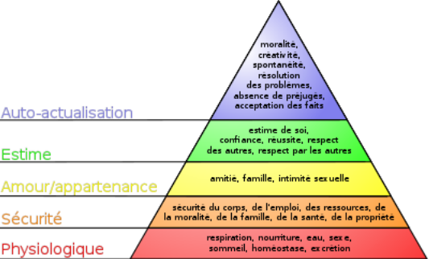
source
Nourriture et eau
Chacun a droit aux vitamines élémentaires, choisies dans différents
produits, assez pour être en pleine santé (régime parfait mais libre, et
composé par des nutritionnistes indépendants des multinationales bien
entendu, on choisit ce qu’on prend jusqu’à ce que tous les élements de
la vie soient réunis) et une fois que c’est atteint ils sont libres de
consommer des drogues (café, sucre, alcool,…) tant qu’elles ne sont
pas interdites par des études et qu’il y en a assez, une personne peut
en avoir autant qu’elle veut tout en restant en dessous d’un seuil
auquel cela endommagerait sa santé au long terme (parfois un petit
excès… pourquoi pas, si les gens veulent s’oublier, parfois ? Tant
qu’il y en a servez vous mais équitablement, sans dégats long terme
toujours et avec des prix exponantiels pour les drogues). Pas de
stockage de ressources essentielles à la vie sauf en temps de surplus
pour tous (si c’est une bonne saison, et qu’il y a trop. Vous trouvez
ça normal des obèses pendant que 25000 personnes
meurent de faim chaque jour ?). On peut choisir un régime végétarien ou
autre et la nourriture est locale autant que possible venant du potager,
il faut un contact avec les animaux de la ferme qu’on mange pour
conscientiser les gens sur la source de leur nourriture. (non les
poissons ne sont pas sous forme de fish tick dans la nature) Pour
conseiller les gens vers un bon choix d’alimentation il est nécessaire
de continuer le combat aujourd’hui qui est mené en Europe notamment pour
mettre clairement la quote des aliments et de leurs différentes parties,
pour empêcher les multinationales de cacher leurs poisons.
Le système de production global de la viande tel qu’il est maintenant
est bien sûr inacceptable. La viande est un met de luxe pas de
consommation de masse, il suffit de voir le temps qu’il faut pour la
produire pour s’en convaicre (2 ans pour la vache si on ne la laisse pas
vivre + faire pousser le soja au lieu de le manger tout de suite, on
perds 90 pourcents de l’énergie et des tonnes d’eau sont nécessaires) en
plus il n’y a rien de plus nourrissant que la viande mais il ne faut pas
en abuser (le point où on en abuse étant déterminé par des
diététiciens). Il faut un système local où l’on voit et comprends les
animaux, pas une machine infernale qui a besoin de toujours plus de sang
pour huiler ses engrenages.
L’idée concrète est donc de revenir aux habitudes du passé, en allant
chercher ses produits chez le fermier du coin en payant en monnaie
locale, et pendant ce temps les enfants peuvent s’épanouir avec les
animaux (et aussi avec d’autres enfants, c’est un lieu de rencontre
convivial). Bien sûr pour l’instant des fermes ne sont pas disponibles à
proximité de chacun, et dans ce cas on met un système automatique qui
amène les ressources demandées par les gens (sans dépasser le quota de
tous, raisonnable bien sûr).
Pour des produits plus industriels une transparence complète doit
exister, chaque produit doit se baser sur plusieurs études montrant
qu’il n’est pas dangereux, même combiné à d’autre produits (le fameux
effet coktail,
un produit seul est souvent inoffensif mais il faut considérer le
mélange de tous ces produits). Les produits sont interdits avant que ces
études aient été réalisées, ils sont présumés coupables de cancers, on
ne rigole pas avec la santé des gens ! Au début de la conversion de
système il faudra bien sûr commencer par utiliser les stocks et
s’assurer que chacun mange à sa faim, c’est donc la production qui doit
être interdite sur le long terme, on ne va pas jeter les milliards de
produits sauf s’ils sont vraiments dangereux même pour une consommation
temporaire (et c’est sûrement le cas si on s’attarde sur le cas de
certains médicaments).
Même si le système actuel n’est pas révolutionné il est capital
d’interdir les exhausteurs de goûts et autre trompeurs de notre cerveau,
qui permettent à ces industriels de nous vendre de la merdre et la faire
goutter bon. Dangereux ?
Et pendant qu’on y est interdisont les brevets sur les formes de vie…
Il y en a qui se prennent pour Dieu dans des laboratoires !!
Logement, habillement
La valeur d’un logement dépend des m², de l’étage, de la localisation,
du type d’appartement, du mobilier… le tout converti dépendant des
disponibilité locales. Il y a une température garantie (entre 15 et
25°C, cela dépend des disponibilités en gas/électricité et de la
préoccupation mondiale pour la planète). Les batîments devront avoir
leur isolation (et plus ? panneaux solaires ?) rénovée autant que
possible avec les ressources disponibles, ce sera bien sûr fait
progressivement et avec des techniques modernes.
Il va de soi que chacun à droit à s’habiller. Les vêtements des jeunes,
nouveaux nés (qui changent beaucoup car on grandit) devraient être
échangés suivant les principes du 0 déchets, le tout provenant de
différents endroits où l’on peut venir chercher des vêtements tout en
déposant des anciens, abîmés ou juste pour changer ! A ces endroits
seront des gens capables de recoudre tout ça et l’idée est une boucle
d’échange de vêtements (et de réparation de chaussures puisqu’elles se
forment à notre pied), ils sont amenés, lavés et remis à neuf pour que
quelqu’un d’autre les reprenne par après en laissant l’un de ses anciens
ou qu’on le récupère si le coeur nous en dit. Un peu comme les fablab de
téléphones qui devront être mis en place, décrits dans le livre
l’économie symbiotique. (pièces
interchangeables et réparables)
Energie
Alors moi ze veux de l’énergie durable, locale, en grande quantité,
tout de suite… C’est bien beau de rêver… ou plutôt d’avoir un
objectif difficile à atteindre mais c’est normal ça n’est qu’une
direction à suivre ! Il n’y aura sûrement pas de solution parfaite alors
il faut se contenter de compromis. Par exemple le nucléaire semble moins pire que les énergies fossiles car ses
déchets ne perturbent pas l’équilibre climatique planétaire. De plus la
fusion nucléaire est meilleure, La vraie solution à l’énergie est de
diminuer nos exigeance souvent beaucoup trop élevées en consommations
d’énergie qui n’a fait qu’augmenter (par personne). Les batteries et
panneaux solaires ou autres solutions durables nécessiteront toujours
d’extraire des matériaux ce qui avant d’avoir des robots pouvant miner
est problématique au niveau éthique quand on envoie des enfants dans les
mines… Il faut donc en diminuer le besoin un maximum et améliorer les
conditions de travail tout en se rendant compte que ça serait
difficilement parfait.
Je ne suis pas un professionel sur le sujet, la réflexion profonde de
quelle source d’énergie reviendrait plutôt à des ingénieurs mais je veux
être sûr d’aborder tous les points afin de lancer la discussion. Avec le
développement de voitures autonomes, il faudrait réaliser la fusion
nucléaire afin d’avoir une source d’énergie presque inépuisable et qui
semble durable. L’humanité réunie, sans les problèmes des guerres
incessantes etc ne devrait pas avoir de problèmes à réaliser des grands
projets tels que celui ci et le développement des zones pour l’instant
exploitées en forêts pour préserver l’équilibre climatique global. En
parlant de forêts la coupe de l’amazonie et autres trésors de
biodiversité doit être interdite ! On peut obtenir le bois à partir de
coupe durable de forêts contenant juste des arbres qu’on a planté, au
lieu de détruire un environnement qui a pris 700 ans à se
créer…***source De plus 80 pourcents de la coupe de bois est pour
planter du soja pour le betail ou encore pire des palmiers pour les
produits capitalistes. Il y a pourtant du bois légal mais par exemple en
Europe 5 à 15% du bois vendu est illégal.
Préoccupez vous donc du logo sur le bois que vous achetez pour le jour
présent.
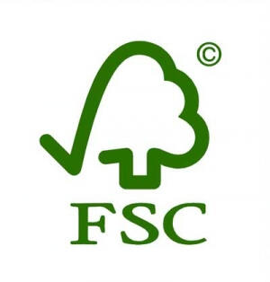
Pour pallier à des besoins en énergie en la produisant le plus
localement possible des panneaux solaires seront installés en masse sur
les toits, puisqu’ils devraient tenir plusieurs dizaines d’années sans
entretien et produisent le courant là où il est utilisé.
Manque de ressources primaires
Le but général recherché est de mettre tout le monde au même niveau avec
la répartition des ressources. Mais ce n’est pas toujours possible…
Exemple : 5 medicaments pour la population malade, comment faire ? On
les distribue au pif à ceux qui les veulent ? (les vieux par ex ayant un
esprit altruiste et refusant sachant que des jeunes en ont besoin et
n’ont pas encore eu leur part de la vie?) Ou plutôt à ceux qui le
méritent le plus ? Comment déterminer ce “mérite” ? Voila des
questions éthiques auquelles il faut trouver des réponses. (à moins
qu’on considère l’éthique comme un luxe qu’on se permet quand il n’y a
pas de problèmes, comme aujourd’hui ?)
Quand le nouveau système fonctionnera correctement, après plusieurs
générations, il y aura des ressources pour tous, autant que la Terre
puisse en produire sans l’exploiter tel un parasite comme c’est le cas
maintenant.
Mais il est possible que le système actuel ne permette pas cela car il y
a trop de gens ou que la Terre est exténuée et ne peut pas naturellement
produire assez de certaines ressources pour tous. Notons d’abord que
l’eau et la nourriture ne seront jamais un problème, leur répartition
est juste inégale. Nous sommes carrément capables de nous permettre
aujourd’hui de perdre 90 pourcents des nutriments des récoltes
***source en les transformant en viandes… et 13000 L sont
disponibles par personne et par jour au niveau global.
Dans le cas d’un manque de ressources on se serre la ceinture puis il
peut venir un moment où l’on est forcé de faire des choix qui peuvent
paraître peu éthiques.
Rappelons nous d’abord que dans le capitalisme des gens meurent de faim
car ils sont nés au mauvais endroit; car ils n’ont pas assez d’argent;
ce concept qui définit des valeurs des biens ainsi que à quel nombre de
ceux ci nous avons droit en fonction du travail et surtout à quel point
nous exploitons, ou sommes exploité. Ainsi certains meurent de faim par
manque de chance (sous payés par exemple) et d’autres vivent dans
l’opulence par exploitation.
Le nouveau système pourrait avoir un manque de ressources et un
compromis possible à une telle crise serait de choisir qui “mérite” le
plus de ressources. Cela pourrait sembler injuste, mais me semble mieux
que le hasard; on choisit de donner moins aux légumes, tueurs
psychopates, malades mentaux, seulement si personne de proche ne s’en
occupe; ceux qui ne font que prendre des ressources de la société, pour
le reste s’il le faut les familles seront faire le choix difficile je
l’espère de laisser mourir de faim un membre plutôt que tous. Bon ici on
envisage le cas d’une famine mondiale de manière très négative. Ne vous
inquiètez pas en pratique cela ne sera pas possible comme aujourd’hui
puisque la permaculture (culture de plusieurs plantes qui se complètent)
sera en application dans tous les coins du monde qui sera beaucoup moins
connecté et vulnérable qu’aujourd’hui (on ne produira pas par exemple
toute la technologie en Chine).
Droits
Santé
On met tout le monde au même niveau, il n’existera presque plus de
personnes attrapant l’obésité pour lesquels cela ne vient pas d’une
maladie puisque personne ne recevra une telle malbouffe qu’ajourd’hui,
et qu’on ne mangera pas en tel abus, donc on les aide, s’ils le
désirent, ainsi que tous les autres qui ont souffert de ce système
actuel.
Il y aura moins de cancers avec l’amélioration de la qualité de vie, qui
découlera du changement de la manière de produire la nourriture : locale
et saine. Les malades mentaux ont droit à leur traitement s’ils le
désirent mais sans pour autant être enfermés sauf s’ils sont dangereux
pour les autres (s’ils sont dangereux pour eux même alors on met en
place une surveillance par les proches qui est évidente pour ceux ci,
dans une mentalité altruiste ! On va pas les enfermer à vie quand
même…). Aussi dans le cas d’un traitement il doit être réalisé de
manière humaine; avec des psychologes qui s’occupent de la personne avec
les proches pour appui. Les fous ne font parfois que penser différement
de la masse de la société et pourquoi serait-ce un problème ? Pas
question de juste transformer des gens en passif qui voient la vie
passer devant eux au lieu de vire, à coup d’antidouleurs ou autre
médicaments endormant la conscience, qu’importe leur âge ou condition
mentale (sauf si la personne le demande). Il faut confronter le problème
pas l’ignorer ou il ne fera que s’agraver, et les antidouleurs,
antidepresseurs ou autres ne sont qu’une manière d’éviter de se
confronter à la réalité, il ne faut donc pas en abuser ou les présenter
comme un traitement.
Il est important de vérifier la situation des enfants du plus jeune âge,
avec des gens compétents qui feront des visites à domicile imprévue pour
donner des conseils aux jeunes parents jusqu’à ce que l’enfant ait 18
ans, mais bien sûr si la situation est parfaite pas besoin de revenir
fréquemment et des spécialistes peuvent être appelés pour venir plus
fréquemment pour des cas particuliers (par n’importe qui).
Car être parent n’est pas aussi simple que ça, regardons un instant la
quantité de violence familiale qu’il y a et l’on est convaincu. Lien :
amnesty chiffres de la violence conjugale.
Les enfants ne doivent en aucun cas être les souffres douleurs des
malheurs des parents ! Bien entendu une fois ce nouveau système en place
le niveau de stress général des gens devrait descendre puisqu’il n’y
aura plus rien qui les écrasera comme un salaire diminuant avec les
heures de travail augmentant mais à la place ils seront poussés vers le
haut par les autres et par la société. Beaucoup de ce que les gens font
dépend de leur environnement. Et si on frappe le gosse c’est souvent car
il crie pendant la tv par exemple mais il suffit de commencer par
éduquer les parents. De préférence avant même qu’ils n’aient un enfant,
sur ce que ça représente.
Pourquoi serait-il nécessaire d’avoir de l’argent pour avoir le droit de
vivre, d’être soigné ? Les opérations coûtent aujourd’hui trop cher, et
si une mutuelle existe ce n’est pas le cas partout et elle n’est pas
suffisante pour rendre la santé gratuite, comme elle devrait l’être. On
produit quand même tellement de médicaments inutiles c’est qu’on a les
ressources pour. Personne ne mérite de mourir pour une question d’argent
!
Il va de soi qu’on ne va pas non plus être stupidement généreux et
naifs. Lorsque quelqu’un est traité pour un problème lié à une drogue,
un passé difficile (non aimé par les parents/harcelé…) ou tout autre
pour lesquels un suivi psychologique pourrait aider, on le lance en même
temps (gratuit bien sûr, comme la santé mentale devrait l’être ou alors
on fait payer ceux qui font des pubs pour lesdites drogues dans le cas
des cigarrettes, de l’alcool ce n’est que justice !). Ce traitement a
pour but d’aider la personne à vivre sans cette drogue voire l’aider
pour d’autres problèmes (car si elle a commencé à consommer des drogues
ça peut être à cause d’un problème qu’elle ne se sentait pas capable de
gérer).
Les suivis psychologiques ne consistent pas seulement en psychologues
mais aussi en suivi avec les proches qui peuvent aider la personne qui
en a bien besoin au niveau de la vie de tous les jours. Peut-être même
que le problème vient de là à la base.
Concernant les drogues d’ailleurs l’Etat a un énorme conflit d’intérêt
pour les drogues “légales” comme le sucre, pire que la cocaïne (bien
que cela est débatu pour l’instant, sûrement pas à cause des lobbys qui
financent de fausses études, voici un
article
sur le sujet) ou les cigarettes, ou encore les jeux d’argent, l’alcool
le tout étant clairement nocif pour l’humain mais l’Etat touche des
taxes dessus et il n’a donc pas vraiment intérêt à restreindre leur
consommation. Quand à elles les drogues illégales sont bannies, ceux qui
en consomment considerés comme des drogués par ceux là même qui
consomment plusieurs drogues par jour… ironique. Il faut au moins
mettre des indications qui signalent à quel point la drogue est nocive
et la liste de ses effets secondaires sur chaque produit qui la
contient.
Tous les médicaments inutiles, qui ne traitent rien seront supprimés. Il
va de soi qu’il n’y a aucun problème d’utiliser l’effet placebo qui fait
que donner une pilule aux gens fait qu’ils pensent qu’ils vont guérir
mais on peut le faire sans avoir autant de médicaments différents
superflus, inutilement complexes et surtout sans forcément mentir aux
gens (voir la vidéo de Vscause, the power of your brain) qui est en anglais,
si vous ne comprenez pas l’anglais il possible d’avoir des sous titres
sinon je vous invite à faire des recherches par vous même.
Toujours concernant les médicaments il est normal que les médecins
soient suffisament formés pour pouvoir décider par eux même du
traitement le plus approprié pour leur patient et pas question de les
attaquer en justice sauf si celui ci s’en porte moins bien. Si le nombre
de médicaments est trop grand alors ce sont d’autres experts
indépendants des entreprises pharmacieutiques qui doivent être formés
pour faire le tri, les regrouper en catégories. Si ces experts se
rendent compte de l’inutilité d’un médicament celui qui a ordonné sa
production est tenu responsable.
Aussi les mouroirs (“maisons de retraites”) devraient être améliorés
ou remplacés par les proches s’occupant de la personne (tout comme elle
s’est sûrement occupée d’eux quand ils étaient très jeunes et
vulnérables, ce n’est que justice). Dans le cas où il n’y a pas de
proches voulant s’occuper de l’aîné, il faut bien sûr organiser des
homes, des systèmes de cohabitations ou autre puisque les aînés ont
beaucoup à nous apprendre ! Il est inacceptable de transformer les gens
en passif au nom de la productivité des soignants qui sont sensés servir
à ça justement… s’occuper des caprices. Tout ça pour “optimiser”,
réduire les dépenses concernant la santé nous avons des fiches avec la
rentabilité probable, il faut être efficace… On perds le temps des
contacts humains autant entre membres des hopitaux qu’entre eux et les
“clients”. Les être humains ne peuvent pas être traités comme des
machines sans besoins sociaux et le budget de la santé doit être
incompressible. De plus le stress résultant de la nécessité d’efficacité
peut coûter des vies, par manque d’attention. Les gens ne peuvent PAS
être réduit à un rendement potentiel qui définit si on les soigne ou pas
!
Dans le cas où quelqu’un souhaite mettre fin à ses jours cela rentre
dans ses libertés mais il doit par avant voir 2 psychologes. A ce moment
là on peut donner une dose léthale, après avoir bien sûr consulté les
proches, qui n’ont pas leur mot à dire là dessus, à part en convaincant
la personne. Interdire ou regarder avec mépris le suicide ne fait que
pousser les gens à faire des tentatives en cachette.
Les expériences sur les animaux peuvent être réalisés mais seulement
dans des cas d’absolue nécessité (exemple : tester un sérum urgent), pas
pour des produits de beauté superflus par nature, par le nombre de vies
qu’ils sauvent chaque année en évitant les crises cardiaque en se
voyant dans le miroir, mais en coûtent à ces pauvres animaux qui sont
conscients après tout. Je conseille les livres lettre ouverte aux
animaux par Frederic Lenoir et sommes nous trop bête pour comprendre
l’intelligence des animaux ? de Frans de Waal pour murir, réfléchir sur
le sujet.
Les géants de la santé, les plus riches du monde par leur arnaque
mondiale doivent être contrôlés. Simple, comme les cigarette leur
royaume s’écroulera une fois les pubs manipulatrices et médicaments
inutiles interdits puisque ce sont une de leur principales sources de
revenu. Pareil pour les paradis fiscaux (la planète en sera un). Dites
vous bien que pour l’instant ces industries pharmacieutiques gagne des
milliards.
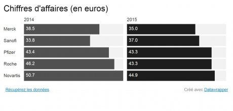
source
L’effet de tous ces changements devrait être fénoménal ! Enfin plus de
restrictions à l’intelligence humaine, par une éducation renouvelée, la
santé pour tous et la fin de la manipulation, en plus d’un système de
pouvoir nous concernant tous, beaucoup de nouvelles bonnes idées
devraient donc surgir par intelligence collective ! Cela vaut la peine
de se battre !
Sécurité
Chacun à droit à la sécurité mais il faut toujours un équilibre entre
celle ci et les libertés personnelles, avec une préférence pour trop de
libertés. (on n’a jamais trop de libertés)
Dans cette optique là il est impensable de surveiller des gens, de
manière automatisée ou non à part si ils ont prouvé être dangeureux par
le passé par un meurtre. Il est aussi bien sûr impensable d’imposer des
mesures aux citoyens en tant qu’Etat dictatorial puisque cet Etat
n’existe pas, les mesures d’urgence doivent être prises et décidées par
les citoyens et par personne d’autre à part en cas de guerre.
Liberté
La liberté est le point le plus important à cours terme quand les
besoins de base sont satisfaits.
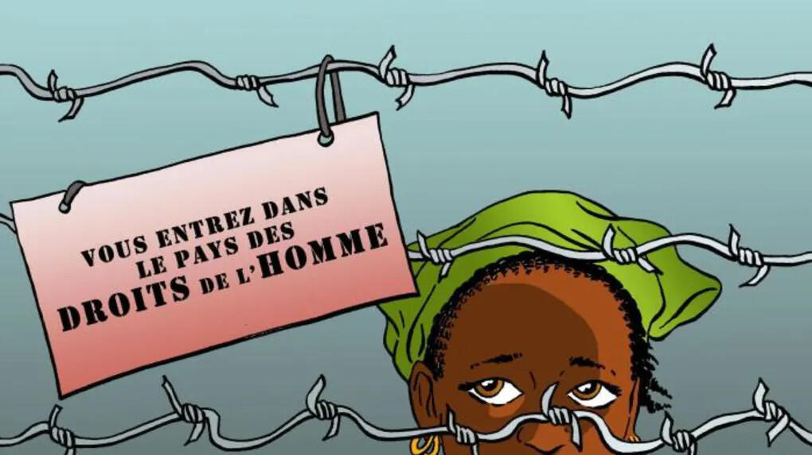
source
Il va de soi que toute forme d’esclavage doit être abolie le plus vite
possible (les gens étant forcés de travailler pour avoir à manger, le
tout en dessous du salaire vital ça n’a bien sûr rien à voir avec de
l’esclavage car c’est quelque chose que l’on a aboli, non ?). Ainsi
tous les gens travaillant pour un salaire de misère, donnant un prix
diféré de la valeur réelle du produit (des vêtements par exemple)
pourront s’ils le veulent continuer dans des conditions plus favorables.
Personne ne sera dans une situation desespérée et donc exploitable une
fois le nouveau système mis en place (c’est le but en tout cas).
On peut avoir plus que les autres dans certaines parties (meilleur
logement/ nourriture/ voyages…) qui sont vues comme une ressource.
Les moyens de déplacements sont tout simplement des voitures, avions,
bateaux… autonomes. Concrètement le but est qu’on ne polluent pas à
part au niveau de la fabrication et que le tout fonctionne sur des
panneaux solaires ou autres source renouvelable. Ils pourraient être
chargés par d’autres véhicules qui auraient été reprendre de l’énergie.
Un système automatisé et bien développé sur base d’intelligences
artificielles doit être rendu possible et est l’un des objectifs d’une
coopération mondiale. Tout cela dépend bien sûr d’un internet global
performant ou local entre les différents appareils en plus de senseurs
sophistiqués. Bien sûr plus le coût est haut pour la société plus la
valeur du déplacement augmente. Mais on doit être sûr que toutes ces
ondes n’interfèrent pas avec la vie locale (animale dont les humains) et
il faut donc éviter de placer ces autoroutes automatisées proches de
villes ou réserves naturelles. Pour le déplacement dans les villes des
moyens de déplacement non automatisés sont donc à viser, qui ne polluent
pas de préfèrence comme les vélos, la marche à pieds, et surtout les
transports en commun qui peuvent être autonomes sans être forcément
connectés par des antennes partout, le tout sous la terre.
Pour les gens différemment aptes (“handicapés”) il y aura mise en
place d’adaptations pour qu’ils puissent avoir la même capacité de
mobilité que tous. Les voitures autonomes seront à la disposition de
tous pour se déplacer à une distance relativement proche.
Espérons que les prisons ne soient pas nécessaires. Il n’existe pas de
criminels seulement des malades, par leur vécu difficile, manque
d’éducation ou des gens désespérés à cause du capitalisme la solution
n’est donc pas de les enfermer mais bien de les aider avec un suivi
psychologique (s’ils sont dangereux pour les autres il faut un bracelet
électronique avec un suivi adapté ou un suivi par les proches, en plus
des psychologues). Pour les pires cas il faudra peut-être parfois
enfermer des gens si les ressources le permettent. Mais il va de soi que
le monde sera dénué d’arme à part celles du trafic en noir, et la
possession d’arme sera sévèrement punie (sauf pour les armes non
lethales de ceux qui choisissent de faire leur devoir de régulateurs de
l’ordre). Si l’humanité est unie pourquoi avoir des armées ? Des
mentalités comme “pour décourager les autres de nous attaquer” sont
celles qui ont lancé la guerre froide et faillies anéantir l’humanité,
et pour nous défendre d’envahisseurs extra-planétaire c’est comme se
battre au lance pierre contre un missile à fusion nucléaire… autant
se rendre (ou plutôt coopérer).
Notons que dans le cas du système actuel le budget de la justice est
plus compressible, peut parfois être sacrifié puisque tout ce qu’il fait
c’est maintenir le système actuel et ses lois qui ne sont pas forcéments
parfaites. Rien d’objectif en soi, et la santé, l’éducation des gens
sont plus prioritaires.
Il va de soit que n’importe qui peut déclarer une infraction (par une
procédure assez longue pour empêcher les abus et mensonges). Tout le
monde est flic, mais pas trop non plus car certains ont le devoir actif
de préserver la paix (volontaires formés).
Aussi il me semble raisonnable de donner un avantage aux gens qui aident
la société par exemple en refaisant leur permis de conduire tous les 5
ans par exemple.
Chacun est libre d’avoir sa culture et son identité propre, que ce soit
par une langue locale, la culture du pays, des croyances… (tant
qu’elles ne rendent pas la personne dangereuse et d’ailleurs tous ceux
qui ne respectent pas les principes de leur livre ne peuvent être
considerés comme croyant mais bien comme malades mentaux et les
croyances encourageant la violence, comme le capitalisme avec son Dieu
argent doivent être bannies)
Information
Il va de soi qu’internet doit être neutre (pas de priorité pour certains
contenus) bien qu’il serait utile d’avoir un système ne prioritisant pas
les sites sur base bassement financières mais plutôt d’avis d’experts.
Cela pourrait également être réalisé de manière autonome par des
algorithmes comparant les informations des différents sites et retenant
l’information la plus recensée (on ne compte pas autant les sites se
référençant entre eux, mais plutot des sources indépendantes arrivant
aux même conclusions). Internet est en effet énorme et ce serait donc un
travail de titan de voir la fiabilité des contenus mais en fait chacun
pourrait y participer : il faut toujours vérifier ses sources, c’est à
dire la date (récente?) et le niveau de connaissances de l’auteur.
Ensuite parlons des médias. Ils sont pour l’instant beaucoup trop
centralisés et contrôlés par très peu de personnes qui n’oseraient bien
sûr pas changer l’information, ou interdire certains articles… Et
aucun média n’oserait faire des titres exagérant la réalité pour avoir
plus de vente bien sûr… Il est primordial que les gens soient bien
informés pour leurs différents choix de vie et donc il faut arrêter
toute dépendance des médias à l’argent, ainsi qu’à un groupe qui pourait
forcer certains articles à sortir, entravant la liberté des
journalistes. Cela n’a pas de sens de se faire de l’argent en informant
les gens puisque ça influence l’information elle même. L’effet est très
simple : les médias ont tendance à éxagérer les faits pour mieux se
vendre, créant un effet boule de neige (papillon aussi) entre eux,
jusqu’à ce que l’hystérie de masse arrive comme cela a été le cas pour
les attentats, les migrants ou le dernier virus.
6 millions de personnes meurent de la cigarrette tous les
ans
et 7 millions de la pollution,
beaucoup trop de la faim et des accidents de la route mais ça c’est trop
banal, récurrent il faut croire puisque les médias n’en parlent pas.
Les médias seraient-ils aussi influencés quand à quels sujets choisir ?
Ca ne serait pas aussi surprenant que ça si on considère le fait qu’ils
sont dirigés par certains qui n’aimeraient pas perdre de l’argent avec
des descentes de parts de… je ne sais pas moi, la voiture pour les
accidents ? La cigarrette pour sa mortalité d’un consommateur sur 2 ? Ce
n’est bien sûr que de la spéculation mais un tel conflit d’intérêt ne
doit pas exister.
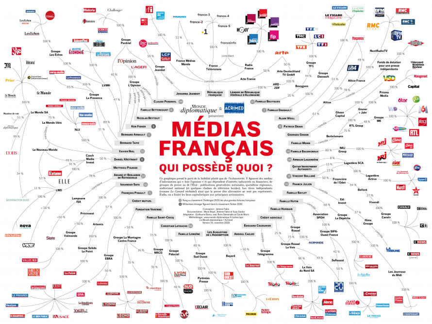
source
Est-il normal que tellement peu de personnes controlent l’information de
millions ?
Information par les publicités
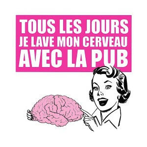
source
Tout le monde adore les pubs mensongères créées à des fins
manipulatrices pour pousser à acheter des produits en jouant sur leurs
envies ou valeurs, le tout en ne mettant même pas le produit comme
centre d’attention (les belles femmes sont plus attractives… mais où
est le rapport ?). Mais ces spots pourraient donner des informations sur
l’actualité, sur la culture (pièces de théatre, film, livres, articles,
expositions… qui devraient germer partout avec plus de liberté, ou sur
des produits mais réalisé par un indépendant objectif !). Il faudra des
gens pour juger l’objectivité.
Les pubs aujourd’hui ne peuvent pas littéralement être mensongères car
c’est interdit par la loi (et oui, difficile à croire non ?), à la place
elles suggèrent des choses (très fortement) afin de manipuler les envies
des gens.
Et voila, maintenant on apprend que de 1/3 à 97 pourcents des
médicaments sont inutiles (cela varie en fonction des sources et je vous
invite à chercher en ligne par vous même). Quel gachis de ressources.
Ces médicaments ont dû être réalisés avec des plantes et autres, et des
gens les prennent penser solutionner leurs problèmes, quel abus de
confiance et gachis de ressources. Tout ceci manque cruellement de
transparence.
Les médicaments devraient être prescris pas des médecins (en tout cas la
majorité), et donc pourquoi en faire des pubs ??? Je suis sûr que
certains médecins se rendent compte de l’inutilité de certains
médicaments, seulement ils sont trop poussés par les firmes
pharmacieutiques, leur offrant des vacances etc source : cadeaux des industries, france inter
(ces firmes écrivent parfois même des livres parlant de comment traiter
les malades… pratique! ***EXEMPLE WITH HOW TO TREAT MENTAL
DISORDERS PSYCHOLOGY BOOK).
Pendant qu’on y est il est temps d’y voir clair ! Les sous marques c’est
pratique pour les multinationales car on ne se rend pas compte qu’elles
possèdent absolument tout ! Il est grand temps de mettre une nouvelle
loi : obligation d’indiquer la marque en amont(exemple : coca pour tout
ce qui se boit sans être alcolisé) aussi clairement que la sous marque
du produit.
Ceci permettrait enfin d’y voir plus clair.
Il ne faudrait donc non pas interdire les pubs mais bien les baser sur
des faits quand elles sont pour un produit, et pourquoi pas sur des
valeurs quand elles sont sur une marque mais pas juste inventées, par
exemple oxfam peut revendiquer les valeurs sociales. Ceci va encourager
les marques à trouver des valeurs à défendre, mais vraiment, en
donations, en salaires corrects, en valeurs de santé du client par des
meilleures choses étudiées par des médecins… Mais comment forcer
l’objectivité ? Facile : on créée un nouveau job, objectiviseur. Quand
une société veut faire une pub, déjà elle doit passer par une entreprise
appropriée mais ensuite si cette entreprise ne réalise pas un travail
objectif selon l’objectiviseur on lui dira quoi changer, avec des
pénalités graves pour des entreprises qui n’écouteraient pas.
Aussi l’empire des cigarrette a seulement pu se propager avec des
publicités, autrement qui s’empoisonnerait ? (10 millions en meurent par an
quand même) Ceci est la preuve ultime que nos envies sont manipulées.
Les pubs pour des drogues devraient être interdites, non ? Alors
pourquoi ces pubs pour le vin, le sucre (qui selon une étude a été
démontré pire que la cocaine, et même si ce n’est pas vraiment le cas
celà reste une drogue beaucoup trop facile à acheter. Comment l’alimentation influence notre Cerveau), le café… Il
faudrait que les gens soient libres de suivre leurs envies et pas celles
des multinationales qui ne veulent qu’une chose : la consommation en
masse.
Vie en pays “développés”
Il est évident qu’il faut préserver la vie, humaine ou non autant que
possible. Alors dans cette optique il y a quelques changements qui
peuvent être apportés, tout de suite ! (sans devoir faire tous les
points précédents)
Dans le cadre de cette crise on nous a demandé des sacrifices énormes
pour sauver les plus vulnérables mais on pourrait sacrifier des choses
bien moins importantes que la liberté pour sauver beaucoup plus de vies.
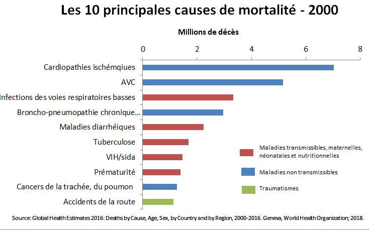
source
Accidents de la route
1,35 millions
Bon commençons par le plus simple quand un accident se produit ou après
un certain nombre d’année il serait bon de faire un rappel du permis,
pour pousser les gens à le faire il suffirait de leur donner un peu
d’argent ou avantages.
Ensuite on pourrait aussi diminuer le trafic routier en proposant des
alternatives comme le train ou les transports en communs plus facilement
accessibles, et en encourageant le covoiturage, par exemple en mettant
une taxe inversément proportionnelle au nombre de personne dans la
voiture lors d’une entrée en ville. (donc moins on est plus on paie)
Pollution
Ce point ne devrait pas préoccuper que les écolos puisque 4,2 millions
de personnes meurent de la pollution chaque année dans le monde. Elle
cause des cancers mais qui n’aime pas la fraiche odeur de mazout toute
fraiche sortie de la voiture ? Il suffit de faire les même choses qu’au
point précédent, et pour continuer dans cette logique on pourrait
diminuer la vitesse sur les autoroutes et sécuriser un maximum des
pistes cyclables dans la ville pour que les gens osent prendre le vélo.
Une taxe CO2 serait une alternative (ou si on est vraiment motivé on
fait tout) à la condition que c’est elle qui permettrait de financer
l’augmantation des transports en communs.
Obésité, diabiète
17,7 millions
Les crises cardiaques tuent à la pelle, surtout aux Etats Unis alors il
est grand temps d’agir pour arrêter ce non sens total qu’est l’école
faisant des partenariat avec des multinationales qui causent tous ces
problèmes, manipulant les enfants quand ils sont le plus vulnérable,
incapables de faire leurs décisions par eu même, c’est tout simplement
dégeulasse (comme la bouffe qu’on leur donne). L’excuse des pubs contre
les adultes est qu’ils sont capables de décider par eux même, alors
interdisons la manipulation des enfants qui ne fait que les rendre
obèses en masse.
Vie ailleurs
Les problèmes et causes de mortalité dans le nouveau monde (ou “pays en
voie de développement” ce qui ne montre pas leur potentiel) sont tout
autre, et demandent donc d’autres mesures entièrement.
Il faut bien sûr empêcher l’esclavage moderne réalisé dans certains
(voire tous ?) pays en voie de développement et stabiliser leur
situation en les laissant se débrouiller seul (sauf pour les biens
nécessaires mais ces multinationales qui “apportent du boulot” le font
à un salaire tellement proche de l’esclavage que celà empêche les gens
d’entreprendre ou de faire autre chose de leur temps.) Donc il faut
imposer des mesures strictes à toutes les entreprises dont le respect de
la dignité humaine et d’un salaire minimum et bien sûr arrêter de vendre
des armes !
Cependant je n’ai pas vécu là bas et je n’ai donc que peu d’expérience
sur ce sujet, j’ai besoin que des gens qui connaissent la situation là
bas aident à décrire la situation, pour voir ce qu’on peut faire et les
effets potentiels de ce que je propose. mail **@durable.com
Réflexions - Désserts
J’ai mis ici tout ce qui ne doit pas forcément être fait à un moment
précis du changement, qui ne correspond pas forcément à un changement
factuel mais plutôt mental, ce sont les problèmes qui pourraient être
rencontrés (et leurs solutions?)
source]
Ces capitalistes…
L’autruche
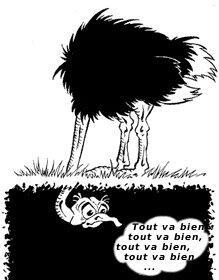
source
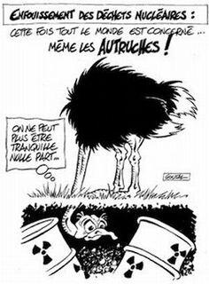
source
Si le monde tourne à l’envers, comment est ce possible qu’on n’ait
toujours rien changé ? Tout le monde dort ou quoi ? Ou on nous cache
tout ça et ils disparaissent ? Possible, mais sans nous lancer dans une
théorie du complot il y a une explication plus simple. On peut dire déjà
que des gens se bougent, ceux qui se sentent concernés en tout cas (je
compte pas pour du beurre moi quand même!) Pour tous les autres la
raison est simple : on nous désoriente, nous perturbe à coup d’études
financées par les lobbys, qui payent aussi directement les politiciens
pour qu’ils prennent leur temps pour améliorer la situation, la Terre ne
brûle qu’un petit peu finalement pas de quoi s’affoler. Ainsi quand on
n’est pas sûr de la nécessité de changer c’est plus dur de se lancer,
déjà que c’est pas facile !
En effet le capitalisme dépend des combats entre les différents intérêts
mais ici le contrepouvoir des lobbys est très faible, les associations
de consommateurs n’ont pas beaucoup de moyen ni d’influence et des
politiciens des Etats, sensés défendre nos intérêts, ont leur intégrité
attaquées constamment par les lobbys, et avec des conférences, restos,
vacances… on peut convaincre certains de la nécessité d’une mesure ou
l’autre.
Puis finalement vous l’avez tous vu l’invasion de zombies et vous être
peut-être même déjà infectés par la technophilie… Cela vous rend
ininterressé par tout à part ces précieux téléphones et compagnies et
leurs différents moyens de distraction (ou perte de temps) comme
facebook, youtube, netflix… J’exagère volontairement je sais bien
qu’il existe une minorité de contenu interressant sur lesdits sites ;).
Et ceux qui refusent le changement?
L’erreur des Russes de vouloir précipiter le changement ne doit pas être
répétée, le changement ne doit être fait au niveau structurel que si
tous sont prêts, idéalement.
Ce livre parle d’une révolution mais d’une révolution de la conscience
commune, de l’altruisme qui ne peut pas se faire par un bain de sang !
Elle peut se faire par autant de grèves qu’il le faut par contre, mais
elle se fera surtout en convaincant les autres de nous rejoindre car la
raison me semble être de notre côté. Et sinon qu’on en discute !
Certains ne changeront peut-être jamais leur mentalité capitaliste en
effet. Pas de problème. Qu’ils essaient d’exploiter dans un monde où
personne ne veut acheter trop, où les gens sont raisonnables et personne
ne se laisse exploiter.
La puissance vient de l’argent, eh bien cessont d’y croire et leur
pouvoir s’écroulera tel le château de carte qu’il est, construit sur
l’exploitation et la misère. Nous sommes les cartes de leur jeu, mais
nous avons une conscience, cessons de nous comporter comme des cartes
amorphes, des moutons empilés. Petit à petit nous pouvons leur faire
perdre leur pouvoir de dictateurs sur le monde par l’argent en imposant
des taxes sur les multinationales et milliardaires (car si nous on en
paie, pourquoi pas eux ? Il me semble qu’ils peuvent plus se le
permettre donc taxons les même encore plus plus ils sont grands !)
Leur monde s’écroulera quand les gens cesseront d’acheter en masse, sans
réflexion et que leur course effrainée au profit sera ralentie par les
taxes qu’ils devraient payer depuis longtemps. Une à une leurs cartes
seront perdues et quand le monde sera prêt ils le seront aussi mais
peut-être pas totalement par choix. Ils dépendent tellement de leur
croissance qu’il suffit de la leur refuser pour les faire tomber comme
les drogués qu’ils sont.
Cette réflexion se base sur un monde sans robots mais même s’ils
existent à quoi bon produire si la précieuse bourse des capitalistes
s’écroule, cette idée tellement peu croncrète, faisant varier la valeur
des vies des gens par l’intermédiaire de la nourriture notamment. Cette
chose ne vaut pas la peine d’exister et elle n’existe que parce que nous
y croyons. Alors cessons de croire en l’enfer si ça nous en libère.
Le problème des compromis capitalistes.
Ce que j’entends par compromis capitalistes sont toutes les choses qui
améliorent le capitalisme, ou plutôt le rendent plus facile à vivre,
ayant pour conséquence que moins de gens sont contre ce système dont on
ne fait que toujours ajouter des sparadras, histoire de le rendre plus
supportable. C’est le cas de certains points de ce livre et c’est
pourquoi j’insiste, pour que la lutte ne diminue pas de force, à ce que
l’on fasse le changement autant que possible dans l’ordre proposé par ce
livre. Le changement de mentalités est primordial et devrait tout
permettre mais sans lui les écrans de fumées qui nous font croire que
tout ne va pas aussi mal commme on aimerait bien que ce soit le cas ne
vont que devenir plus opaques. La surface du capitalisme serait pôlie
mais en gardant toujours un coeur pourri, celui des esclavagistes
modernes.
Le pardon
Il est important de savoir pardonner aux gens, leur donner une seconde
chance mais pas au prix de gâcher les premières chances des autres.
Ainsi il faut qu’il y ait suffisament de ressources pour pouvoir se
permettre ce pardon correctement avec un suivi psychologique etc adapté,
on ne fait pas les choses à moitié. Les jeunes méritent plus le pardon
car ils ont plus facile à changer, ils ne sont pas encore totalement eux
mêmes. De plus les individus avec un passé plus difficile peuvent plus
facilement être pardonné, ils ne sont alors pas mauvais en soi mais
c’est la société qui les a corrompus ou leurs parents qui les y ont mal
introduits selon moi.
Pour pouvoir les pardonner et les réintégrer dans la société il faut
déjà qu’ils réalisent en quoi ce qu’ils ont fait pose un problème pour
la société, et qu’ils réparent les dégâts si possible. (par exemple
quelqu’un qui brûle une forêt devra replanter des arbres) Il existe
beaucoup de “punitions” plus constructive que la simple prison (assez
remplie par ailleurs) en tout cas pour les cas sans morts.
Et ceux pour qui on n’a pas de ressources ? Qui ne les “méritent” pas ?
La peine de mort dérange même si elle a “l’avantage” de ne pas
nécessiter d’un suivi complexe et pourrait donc être considerée en
dernier recours pour des cas insolubles de gens récidivant encore et
encore à tuer. Mais il serait mieux de trouver une alternative, comme
par exemple exiler les personnes de la société puisqu’ils ne savent
apparament pas vivre avec, vers un espace désigné où ensemble ils
organiseront leur propre société peut-être meilleure encore ou
s’entretueront s’ils ne sont vraiment que des bêtes, cela ne dépend que
d’eux mais ils devront vivre en autarcie tant qu’ils ne respectent pas
les droits humain.
C’est seulement réservé pour les cas extrêmes bien sûr comme alternative
à des scéances éternelles chez des psychologues qui essaient de faire
comprendre à la personne la nécessité de telle loi, ou de voir justement
si celui ci est sain et à raison et si il faut remettre en question la
société. Notez bien que les même types de délis seront mis ensembles,
certains délis étants par exemple le trafic d’être humains.
Naïf?
La fin des guerres ?
Bon j’ai beau être un peu idéaliste je me rend bien compte que tous les
conflits ne disparaîtrons pas par eux même de la surface de la planète.
Mais l’interdiction de vendre des armes devrait aider énormément ou en
tout cas arrêter de mettre de l’huile sur le feux (comment se battre
sans armes, munitions ?). S’il le faut des réunions, approches
diplomatiques seront réalisées afin de calmer les derniers conflits.
La majorités des conflits sont attisés par et pour cette vente d’arme,
certains sont autour d’une dispute sur des ressources, d’autres sur des
problèmes d’identités (religion etc) et il y a sûrement d’autres
prétexte que des hommes (j’insiste, des [hommes]{.ul}) utilisent pour se
battre mais je pense qu’il est possible de faire entendre raison à
beaucoup, à partir du moment où les points précédents ont été réalisés
et que les ressources ne sont plus un problème alors que nous sommes
tous unis, rendus forts par nos différences, et que nous prospérons sans
eux. Personne ne désire se battre sauf les fous et les dirigeants qui ne
doivent pas se battre en personne et sont détaché de leur peuple.
Le plus important, mais aussi le plus dur est de montrer le chemin à
suivre. Ensuite d’autre auront facile à suivre dans nos pas, une fois
les avantages rendus évidents. Ne nous décourageons pas car quel autre
sens dans une vie est meilleur que d’améliorer l’humanité, de se grandir
?
Incitations nécessaires ?
Pour certaines personnes il est nécessaire d’avoir une motivation afin
qu’ils travaillent, tout comme il en faudrait une pour pousser les gens
à faire un travail trop peu représenté. Alors faut-il choisir le baton
ou la carrotte ? Le baton semble assez simple à mettre en place : si les
gens ne veulent pas participer un minimum au bon fonctionnement de la
société il suffit de les raisonner, de les convaincre, car cela ne peut
venir que d’un esprit trop égoïste pour un tel système. Bien sûr c’est
la raison pour laquelle il ne faut pas installer un nouveau système tant
que les mentalités ne sont pas prêtent mais tous les points précédents
devraient préparer le terrain. Malheureusement il faut penser à ces
possibilités bien réelles que des parasites humains, pensant toujours en
capitalistess serpents existeront. Ce point reste ouvert à discussion,
surtout que la société peut se permettre une certaine proportion de
parasites. Tout est question d’équilibre.
Tous les primitifs capitalistes et criminels non raisonnables auront
leur place réservée sur la Terre (sur une île de taille appropriée), et
il va de soi que la conversion vers ce système ne doit pas forcément
être totale, on peut conserver certains points du système actuel. Ils
ont qu’à faire leurs bétises là ba ;). Pour ce qui est de la carrotte il
suffirait de donner un bonus temporaire, mais lequel ? Il faut
s’inquiéter du fait qu’une telle chose minerait l’équité visée par le
système (ça ne pourrait néanmoins jamais être pire que le capitalisme
actuel). Je ne détient pas encore la solution à ce problème, à part
espérer que signaler le besoin d’un job poussera les gens à le faire. Il
faudra tester et en vrai cas de manque d’un métier, agir pour mettre des
avantages, qui devront rester temporaires ! Bien sûr pas question de
désavantages pour ceux qui veulent faire un métier sur-représenté.
Régulation
Tout va se passer comme prévu, personne n’oserait tenter d’abuser d’un
tel système voyons… Bon moment naïf fini : il y aura des abus et il
faudra les diminuer (je penses surtout au niveau de sociétés) n’importe
qui peut tout simplement attaquer en justice une entreprise et les
avocats ne doivent évidemment pas être payés par quelqu’un d’autre que
la société en son ensemble. On préfère quand même une justice la plus
équitable possible… Mais quand est-il des sanctions alors ? D’abord
il faut qu’il y ait des personnes qui surveillent que les torts sont
réparés et si ça n’est pas le cas elle doit être dissoute et remplacée
par une autre.
Le vol dans cette société est consideré comme inacceptable puisqu’il ne
devrait pas y avoir des frictions des classes, tous sont égaux, il n’y a
plus aucune excuse au vol, plus de justification ou compréhension
possible. Comment agir alors ? Bonne question.
On ne peut pas juste changer le chef tout en ayant un système ou tout le
monde est à égalité autant que possible : pas de chefs. On préfèrera
donc une autre manière de gérer les usines, entreprises, institutions
publiques… : l’autogestion intelligente. Tout le
monde est à égalité en responsabilités et les tâches tournent, personne
ne regarde des bouteille passer à la chaîne pour y accrocher des
bouchons (en fait si mais pas toujours les même ;)).
Légalité et moyen de l’enforcer
Ne soyons pas naïfs, il y a énormément de trafic existants aujourd’hui
qui dépendent de faiblesses dans la législation, des contrôles ou du
capitalisme lui même qui ne fournit pas les biens nécessaires aux gens.
Seulement ce nouveau système permettra l’accès aux drogues librement,
sous un prix exponantiel certes, mais celà se fera en plus d’une
éducation permettant aux gens de comprendre la raison de cette
limitation. Si ils veulent faire du troc pour avoir plus de drogues,
c’est leur problème, leur santé. Tout ce qu’on peut faire c’est la
prévention et par après proposer des suivis psychologiques.
Cependant tous les trafics ne sont pas aussi anodins. Et comme précisé
dans la section droit et devoir envers la société chacun sera flic
pendant un moment, on ne peut qu’espérer qu’ils dénoncent de tels
trafics. Seulement quel en sera l’objet ? Aujourd’hui c’est utilisé pour
gagner de l’argent, mais dans ce système là ce sera plutôt des biens. Il
reste que la fin du capitalisme devrait permettre de ne plus avoir des
gens en situation aussi désespérées à cause des multinationales qui
détruisent leur avenir, ou des colons qui ont déstabilisé le pays, ou
des pays “développés” qui continuent à vendre des armes. Ainsi une
personne qui disparaît sera recherché fermement et un tel trafic sera
beaucoup moins facile à réaliser avec des gens éduqués qui achèterons
moins facilement à de tels trafics qui sont pas définition contraire à
la valeur principale de ce livre, les droits de l’humain.
Problèmes futurs, du présent
Problèmes de société
Il est primordial de maintenir le peu de biodiversité restant sur la
planète, même d’un point de vue utilitariste les plantes permettent de
faire des médicaments, et ont peut s’inspirer de la nature en faisant du
biomimétisme. Les ressources de la nature ne sont pas à sousestimer !
Prenons un exemple : les arbres absorbent 95 pourcents de la lumière
solaire et nos meilleurs panneaux solaires peuvent à peine se permettre
20 pourcents…(source : l’économie symbiotique et des vendeur de panneaux(qui vont
sûrement être modestes sur l’efficacité de leur produit) et chaque
forme de vie à des caractéristiques propres développés en fonction des
contraintes qu’elle a rencontré et que nous pouvojs aussi rencontrer. Il
est donc important de mettre toutes les chances de notre côté. Aussi
finalement la diminution de la variété d’espèces nous rends plus
vulnérables aux maladies pour ces espèces qui vont toutes mourir par une
seule maladie les attaquant, alors qu’une économie basée sur une
diversité de plantes et autres permettrait une résilience naturelle,
sans besoin aussi important voire tout court de pesticides.
Les disponibilités globales des ressources dépendent des avis d’experts
qui vont faire un compte rendu de l’état de la planète ainsi que de ce
qu’il est encore possible de faire sans la dégrader davantage, un peu
comme cela a déja été réalisé pour le CO² mais également pour le
plastique, les matières premières des appareils électroniques…
Pour les océans il faut arrêter d’y jeter les déchets plastiques et
ensuite enlever ceux qui les infestent déjà, tout en s’occupant de
maintenir la vie sous-marine, il faut sûrement arrêter la pêche
intensive maintenant et imposer les quotas de pêches Européens au niveau
mondial dans un premier temps et se baser sur des études pour voir si il
faut les rendre plus strictes ou non. ***source ? Mais cela s’étend à
toutes les ressources renouvelables de la planète bien entendu, si on
veut qu’elles continuent à l’être pour certaines car à force de pêcher
tous les poissons il n’y en a plus beaucoup, forcément !
Parlons aussi de l’aquaculture car elle n’a rien de mieux ! Il faut 4kg
de poissons convertis en farine pour nourrir 1kg en
aquaculture…source pourquoi ne pas manger ces autres poissons
directement alors ? Eh bien on préfèrerait du saumon, ou d’autres bons
poissons donc on court circuite le système marins pour se comporter en
Dieux malveillants, comme on le fait depuis longtemps sur la terre. Il
va de soi qu’ils n’oseraient pas donner pleins d’hormones permettant de
les faire grandir plus vite à ces poissons, car on n’a pas le temps
d’attendre ! Que ça soit rentable et plus vite que ça ! Les filets de
pêche qui raclent le fond des océans, détruisant absolument toute la vie
sur leur passage sont bien sûr à interdire… comment peut-on déja avec
bon sens les autoriser ? Et ces bateaux avec la folie des grandeurs,
devenant de plus en plus grands avec des filets devenants énormes, de
jusqu’à 45km english longlining size…
qu’on ramasse des mer et vous pensez bien qu’on ne récolte pas que le
poisson voulu, à la taille voulue donc on les rejette dans la mer en un
état pathétique (on ne peut pas pêcher des poissons trop jeunes mais
c’est dur de faire la fine bouche avec des filets pareils, tous ceux
pris sont garantis morts écrasés) les reportages de Jahn Arthus Bertrand expliquent ça beaucoup
mieux que moi, pas seulement pour la pêche.
Changement des espèces, gestion des produits
Aussi appelé heugénisme quand il s’applique à l’humain, ou ogm pour les
plantes, certains diraient qu’il s’agit d’améliorations mais une chose
est sûre c’est qu’on perturbe l’ordre de la nature et ce souvent sans
tester suffisament, rendement oblige. Je pense qu’il y a là un potentiel
qu’il ne faut pas sousestimer mais n’oublions pas qu’il y a également un
danger énorme si c’est placé dans les mauvaises mains ou réservé à une
élite (comme c’est le cas maintenant pour les ogm, et bientôt pour
l’heugénisme).
Si l’heugénisme est réalisé le choix doit être laissé aux gens de se
changer ou non, ou même de faire des lois contre ceci (sans persécuter
pour autant les gens qui ont changé). Notons qu’il doit toujours y avoir
le choix de consommer des organismes génétiquements modifiés ou pas et
dans le cas où on modifie il faut une transparence complète en plus de
nombreux tests avant qu’ils n’arrivent aux consommateurs (manger est
quand même un processus intime, puisqu’on ingère et digère carrément
l’aliment) ! Les tests doivent être réalisés par un organisme aussi
neutre que possible et bien sûr pas sponsorisé par l’entreprise qui
veut propager ce produit… L’organisme doit être mondial mais divisé
en sous organisations indépendantes les unes des autres dont il faut le
feu vert de toutes pour accepter le produit. Et bien sûr il ne doit pas
simplement s’appliquer aux ogm mais bien comprendre différentes sections
spécialisées dans tous les domaines où il y a des produits, surtout
technologiques. Il faut aussi commencer par ré-évaluer tous les produits
déjà existants puisque leur déploiement ou non est parfois déterminé à
travers des “études” sur combien d’argent il faut donner à un
scientifique pour qu’il accepte de prouver dans votre sens (car les
études ont une hypothèse et on peut chercher à prouver qu’un produit est
nocif… ou pas et je vous laisse deviner quel choix est prit).
Surpopulation ?
Il est possible qu’il viendra un moment où il sera nécessaire
d’instaurer un système de régulation de population mais je ne pense pas,
voilà pourquoi : la transition démographique. Un mot bien compliqué pour
dire que quand le niveau de vie augmente d’un coup, les morts diminuent
mais les gens n’ont pas eu le temps de s’adapter à cela et il y a donc
un boom de la population. Ensuite tout se calme car les gens s’adaptent,
faisant moins d’enfants.
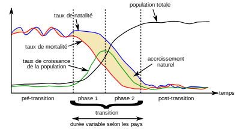
source

Moins de personnes meurent et autant naissent donc la population croit.
C’est la raison qui me fait penser qu’il n’y aura pas trop de personne,
les gens s’adapteront aux ressources qu’ils ont, et s’ils en ont trop
peu ils devraient être assez intelligents pour ne pas faire trop
d’enfants, en tout cas les mentalités ont toujours évolué de cette façon
dynamique.
Mais imaginons quand même que cette situation se représente, comment
faire pour controler la population de manière “juste” ? Limiter à un
enfant par personnne est hors de question bien sûr, mais alors quoi ?
Faudra-t-il des incitents encore une fois ? Cette question comme tout
dans ce livre reste ouverte. Je n’ai pas la réponse. Si l’on n’accepte
trop facilement les compromis on perd l’intérêt même du système mais
sinon on peut perdre le système lui même.
Droits des intelligences artificielles
Il faut se rendre compte que refuser des droits équivalents aux notres à
l’ia une fois qu’elle sera capable de pensée n’est que la pousser à se
rebeller… Car qui voudrait être esclaves ? Bien sûr il faut savoir
quand elle deviendra consciente et non aura la capacité de prétendre
l’être (je laisse ce débat compliqué pour les philosophes et les
spécialistes de deeplearning). Il ne serait pas logique non plus de
refuser les avantages que des ia avancées peuvent nous apporter, n’étant
pas limitées par les yeux pour comprendre les données informatiques et
capables de les traiter avec moins d’erreurs et plus vite que les être
humains. Refuser le progrès c’est refuser le changement et ceux qui ne
s’adaptent pas finissent par périr car la manière de faire actuele n’est
tout simplement pas parfaite, des problèmes finiront par se développer
ou des opportunités seront manquées. Les circonstances changent qu’on
l’accepte ou non.
D’ailleurs la rareté des matières premières fait que les objets
connectés préconnisés par le capitalisme actuel n’apparetront plus comme
un besoin, et ne sont pas prioritaires par rapport à des pc etc, qui a
donc besoin réellement d’avoir des robots qui s’occupent de notre vie à
notre place ? Ou est le hasard, qui pimente la vie, ces appareils
connectés ne font que nous déconnecter de l’humain, oublier son besoin
de socialiser en discutant avec une machine, ou en ayant une machine qui
s’occupe de nous en nous connaissant mieux que nous même au lieu d’un
proche qui le ferait avec de l’attention réelle.
Le futur, optimiste !
Enfin un point positif : les ong. Et les autres ?
Il y a quand même quelque chose à sauver de tout ce qui est en place
actuellement, les ong fonctionnent comme ce système en général, en
respectant leurs valeurs qui leur semblent fondamentales les membres se
comportent vraiment comme des gens courageux, prêt à braver les
adversités sans préoccupation trop grande pour l’argent. Ces
organisations ne seront donc bien sûr pas démantelées mais à la place
incorporées dans le nouveau système, dans lequel de tels projets
devraient fleurir assez facilement avec moins de contraintes et des
mentalités plus en accord avec leurs principes.
Mais il restera toujours des problèmes à solutionner, ne soyons pas
dupes; même s’ils seront au bout d’un moment moins évidents que certains
actuels comme la faim dans le monde, la surproduction et la destruction
de la biodiversité nous pouvons toujours nous améliorer ainsi que le
monde autour de nous.
Cependant toutes les organisations ne sont pas aussi altruistes. Les
plus riches du monde se réunissent tous les x pour décider du sort de
celui ci comme s’ils jouaient aux échecs. Vous en avez pas marre d’être
une sous pièce ? Leurs pièces sont l’ONU, l’OMS qu’ils dirigent
directement (pas compliqué regardez juste les fonds qui sont derrière,
l’argent ne sort pas de nulle part)
Pour les asbl comme ecosia du type promettent d’améliorer le monde, vous
vous demandez sûrement si on peut leur faire confiance. Ca n’est pas
pour autant une raison de ne rien faire ! La confiance prend du temps à
se construire et surtout de l’expérience et on peut donc l’aquérir en
partie en faisant des recherches sur le sujet mais le risque d’une
arnaque persistera toujours on ne peut que le diminuer et en ne prenant
jamais de risques l’on ne fait rien. Cela aide de voir comment des
sources extérieures parlent des asbl.
Organisation technologique et sociétale polyvalente
Pour approfondir ce que j’entends par faire comme dans le livre famille
0 déchets je dirais que ce sont actes surtout personnels et volontaires.
Par contre dans l’économie symbiotique
on parle clairement de manière de mettre tout cela en place : des
endroits, FABLAB qui existent déjà où l’on peut venir pour faire réparer
ses différents appareils sans problème, puisque ceux ci sont construits
de manière à avoir des pièces interchangeables, donc si par exemple la
batterie ne fonctionne plus il suffit de la remplacer. Ces endroits ont
aujourd’hui des imprimantes 3D et avec assez de développement de celles
ci et différents matériaux il devrait être possible de construire
différents appareils sur place, en pièces détachées. Si l’on veut un
meilleur processeur, un plus grand écran il suffit de remplacer les
pièces nécessaires (pareil pour les vélos, et toutes les choses
technologiques pas juste les téléphones). Tout ce qui n’est plus
utilisable doit bien sûr être recyclé.
Mais il n’y a pas que cela qui est bon à prendre dans ce livre !
L’économie symbiotique signifie une économie humaine qui fonctionne de
pair avec l’environnement, donnant un potentiel gigantesque. On suit le
même principe que le projet déjà actuel de faire des potagers couplés à
des aquariums, les déchets de l’un sont les ressources de l’autre ! Il
n’y a pas de déchets finalement, tout est bon à réutiliser, ou dans le
pire des cas à recycler. Je conseille de lire ce livre pour plus de
précision sur les différentes synergies possibles.
Aussi tous les objets qui ne sont pas nécessaires tous les jours, comme
les voitures (autonomes) deviennent propriété de tous et seront
disponibles comme des livres dans une bilbiothèque qui comprendra des
outils etc en fonction du type de celle-ci (aussi inspiré du livre).
Concernant internet et le big data il est urgent que chacun possède ses
données même si l’ont reste dans cette société capitaliste actuelle et
ne les vendant que s’il le désire ! Il ne faut pas laisser les
entreprise avoir toujours plus de détails sur nous car elles ne feront
que les utiliser pour mieux nous manipuler, nous influencer là où ça
fait mal (la bourse). Par exemple le big data est utilisé pour les
campagnes électorales, faussant les résultats par manipulations subtiles
de membres du partis sonnant aux portes pour finir de convaincre les
gens hésitant.
Chacun a bien sûr droit à autant d’identités virtuelles qui le désire et
la neutralité du web DOIT être conservée à tout prix ou la manipulation
pourra être beaucoup plus difficile à stopper. Contrôler les sources
d’informations des gens revient à controler certaines de leurs pensées.
Et après ?
The sky is the limit but not actually. The limit is beyond, unkown,
unexistant? Tout est possible, seul notre imagination est la limite
quand on vit dans une société ou les droits sont respectés et
l’éducation est complète, le tout sans limitations comme la guerre ou la
faim, les morts précoces, les déserts (qui sont faciles à repousser, il
suffit de planter des arbres)… Une fois que la situation sur Terre
sera sécurisée nous pourront regarder vers les étoiles, pour enfin
répondre à nos questions, fort de notre unité. J’ai espoir dans notre
capacité à tous d’espérer et de faire ce qui est nécessaire pour que
l’espoir puisse exister.
Conclusion(s)
Je compte sur vous, sur l’humanité; la société c’est vous… faites la
évoluer comme bon vous semble ! Le but de ce livre est de faire évoluer
les mentalités pour préparer le terrain pour un nouveau système
seulement possible ensembles. Le système n’est que le bout du chemin et
ne peut être mis en place en une fois. D’abord il faut se rendre compte
de sa nécessité puisque tous les problèmes du capitalisme n’ont pas une
solution simple. Ensuite il faut une évolution des mentalités, possible
en changeant le système éducatif et améliorant la santé autant que
possible, puis le système de vote, les gens devenant vraiment capables
de voter de manière objective et individuelle, avec en plus
l’introduction du devoir envers la société pour diviser les pouvoirs et
diminuer la corruption, en faisant que personne doit faire un travail
trop pénible toute sa vie.
Ensuite, par la nouvelle démocratie instaurée on pourra se permettre
d’interdire certaines pubs pour diminuer le pouvoir des multinationales
progressivement, avant d’interdire certains produits nocifs, ce qui fera
diminuer le pouvoir de industries pharmacieutiques, permettant
d’interdire les médicaments superflus pour préparer la fin de leur
monopole et finalement une répartition des ressources équitable (après
avoir fait plusieurs lois pour les redistribuer petit à petit) qui
nécessitera un remplacement de l’argent par des valeurs locales, une
fois tout redistribué selon les droits humains étendus. Les richesses
des riches et multinationales ne leurs appartiennent pas. La Terre est à
tous, car elle n’est à personne. La destitution de l’argent permettra
cet acte final de redistribution (si c’est nécessaire bien sûr, il vaut
mieux redistribuer de manière progressive tant qu’on est pas bloqué par
des égoïstes) et en pleine crise par la diminution de leurs ventes
causée par le changement de mentalités les puissants ne seront plus que
des humains. La puissance, l’argent corrompt toute âme, comme le
capitalisme l’a montré…
Une fois ce système mis en place plusieurs problèmes peuvent surgir mais
ils ne sont pas insolubles et aucun n’est aussi sérieux que le
capitalisme, cause de presque tout les problèmes modernes. Quand
l’argent disparaîtra beaucoup de problèmes vont faire de même, tous ceux
liés à la folie du rendement, de la corruption et de l’interdépendance
globale. Tous les problèmes qui sont lié aux gens confondant la réalité
avec un jeu dans lequel il faut toujours produire plus, plus, plus…
Il suffira de finir d’unir ce monde, endommagé par le capitalisme et le
rétablir avec une nouvelle morale altruiste.
Tout ceci peut sembler distant et insignifiant si l’eau coule toujours
dans votre robinet.
Mais pour combien de temps encore ? Cela en fait-il une ressource
intarrissable ? La manière dont la société fonctionne trop souvent est
de se rendre compte d’un problème quand il est trop tard et ne cherche
des solutions que quand il devient trop dérangeant (dérèglement
climatique…).
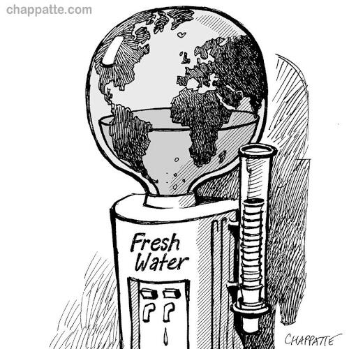
source eau
fraîche
Vous riez peut être si je vous dis qu’elle est limitée mais cette
ressource est de plus en plus rare, surtout dans certains pays et l’eau est payante.
Ce projet peut donner un sens à notre vie,
un espoir qui nous transcende, dont les générations futures pourront
profiter, plus grand que chacun de nous. The whole is greater than the
sum of it’s parts. (Star Trek)
Mais il est urgent d’agir car plus on attend plus ce sera dur de défaire
ce capitalisme avec toujours plus de corruption et de pouvoir à
l’argent. L’homme va être marié à l’argent, agissez maintenant ou taisez
vous à jamais.
Ligne du temps
Il y a dans ce livre un point fragile, un point sur lequel tout se base
: l’information. Il faut informer les gens, propager ces idées, que nous
pouvons choisir la société dans laquelle nous vivrons. Sans celà, pas de
pouvoir pour changer une seule loi, pas de changements. Une fois que les
gens sont informés, voici un cheminement possible d’amélioration du
capitalisme :
***IMAGE LIGNE DU TEMPS AVEC LES DIFFERENTS POINTS ABORDES DEDANS
(GRAPHISTE)
Que faire concrètement?
Simple ! Il suffit de m’écrire un mail avec des critiques constructives,
de rejoindre cette communauté en ligne pour voter les évolutions de tous
ces points, amenez donc ces bonnes idées ! Si on en veut encore dans sa
vie de tout les jours on peut toujours faire des petites choses qu’on
vous a assez répétées comme prendre moins la voiture seul (ça pollue
autant que l’avion), manger plus local, blablabla…
La vraie action je vous la donne moi, maintenant ! Seul on ne peut pas
faire grand chose à part partager ce livre (c’est pas rien!). Alors il y
a une solution : s’unir ! Ensemble nous pouvons faire trembler les
multinationales car elles ne sont que nos servantes, les états car nous
n’avons pas de frontière ! Pour s’unir il faut d’abord s’informer, avec
des idées en commun, d’où le projet de ce livre, qu’il faut partager !
Alors enlevez toute atteinte aux droits humains et que ça saute, s’il
vous plait ! Et mon steak je le prendrai raisonnable ! Pas d’agriculture
déforestière ou élevage intensif dedans, merci ! Le seul vrai pouvoir
que nous avons est notre pouvoir d’achat, l’argent et pas le vote. Le
vrai vote est quand vous achetez un produit ou encore investissez donc
faites le bien !
Nous avons besoin de traduction de ce recueil d’idées dans toutes les
langues différentes et de dessinateurs pour avoir les droits sur les
caricatures. Pendant que vous y êtes il faut un nom pour ce système.
Mais n’oubliez pas :
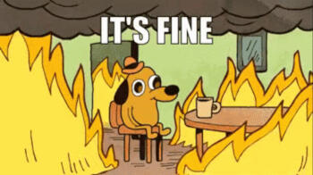
source
tout va bien
Remerciements
Merci à vous de m’avoir lu.
Merci à tout ceux qui ont écris les oeuvres dont je parles, et mes
proches qui m’ont inspirés.
Merci à ceux qui espérent un monde meilleur, et encore plus à ceux qui
se battent pour en faire une réalité.
Nous, humains, ensembles, avons réussi à atteindre la Lune, alors rien
n’est impossible, il suffit de le vouloir !
Car nous ne sommes pas seuls.